แปลหัวข้อย่อยตามต้นฉบับ ลำดับและหมายเลขตามข้อความในไฟล์ แม้ต้นฉบับใช้เลขหัวข้อซ้ำก็เก็บไว้เพื่อเทียบได้
แปลและเรียบเรียงแนวคิดหลัก การสื่อสารข้อมูล (Data communications) คือการแลกเปลี่ยนข้อมูลระหว่างอุปกรณ์ผ่านสื่อส่งข้อมูล เช่น สายทองแดง ใยแก้วนำแสง หรือคลื่นวิทยุ คำว่า “ข้อมูล” หมายถึงสิ่งที่ต้องการสื่อ ส่วน “สัญญาณ” คือรูปทางกายภาพที่ใช้ขนข้อมูลนั้น ข้อความเดียวกันอาจส่งด้วยสัญญาณไฟฟ้าบนสาย หรือสัญญาณแสงบนไฟเบอร์ก็ได้
ระบบสื่อสารมี 5 องค์ประกอบ ได้แก่ Message ข้อมูลที่ส่ง, Sender ผู้ส่ง, Receiver ผู้รับ, Transmission medium สื่อกลาง และ Protocol กติกาที่ทั้งสองฝ่ายเข้าใจร่วมกัน การต่อสายติดเพียงอย่างเดียวยังไม่ทำให้สื่อสารได้ หากรูปแบบข้อความหรือขั้นตอนตอบรับไม่ตรงกัน
คุณภาพการสื่อสารพิจารณา Delivery ส่งถึงปลายทางที่ถูกต้อง, Accuracy ข้อมูลถูกต้อง, Timeliness ถึงทันเวลา และ Jitter ความแปรปรวนของเวลาหน่วง เสียงสนทนาอาจยอมเสียข้อมูลบางส่วนได้แต่ไวต่อความล่าช้า ต่างจากไฟล์ที่ต้องครบทุกบิต
กลับสารบัญ ↑ ทิศทางการส่งข้อมูล
อย่าสับสนทิศทางกับจำนวนสาย: Full-duplex อาจใช้คู่สายคนละคู่ หรือเทคนิคแยกสัญญาณบนสื่อเดียวกันก็ได้ ต้องดูเทคโนโลยี ไม่ใช่นับสายจากรูปแล้วสรุปทันที
กลับสารบัญ ↑ เครือข่าย โทโพโลยี และการประเมินระบบ Network คือกลุ่มอุปกรณ์หรือโหนดที่เชื่อมกันเพื่อแลกเปลี่ยนข้อมูลและใช้ทรัพยากรร่วมกัน เกณฑ์สำคัญคือ Performance สมรรถนะ, Reliability ความเชื่อถือได้ และ Security ความปลอดภัย เครือข่ายที่เร็วแต่ล่มบ่อยจึงไม่ใช่เครือข่ายที่ดีโดยอัตโนมัติ
Star ต่อแต่ละเครื่องเข้าศูนย์กลาง ดูแลง่ายและสายเสียมักกระทบเครื่องเดียว แต่ศูนย์กลางเสียกระทบมาก; Bus ใช้สายหลักร่วมกัน; Ring เชื่อมเป็นวง; Full mesh เชื่อมทุกคู่ มีจำนวนลิงก์ n(n−1)/2 ถ้ามี 5 โหนดต้องใช้ 10 ลิงก์และแต่ละโหนดมี 4 จุดเชื่อมต่อ
LAN เน้นบริเวณจำกัด เช่น อาคาร; WAN เชื่อมบริเวณห่างไกล; Internetwork คือการเชื่อมหลายเครือข่าย ส่วน Internet เป็นระบบเครือข่ายของเครือข่ายที่ใช้ชุดโปรโตคอลอินเทอร์เน็ตร่วมกัน Intranet คือเครือข่ายภายในองค์กร ไม่ได้หมายความว่าต้องตัดขาดจาก Internet เสมอ
กลับสารบัญ ↑ เสริมติว: Protocol กับ Standard Protocol กำหนด Syntax รูปแบบ, Semantics ความหมาย และ Timing ลำดับหรือจังหวะของการแลกเปลี่ยนข้อมูล ส่วน Standard คือข้อกำหนดที่ตกลงร่วมกันเพื่อให้ผู้ผลิตต่างรายทำงานร่วมกันได้ อย่าตอบว่า protocol คือ “โปรแกรม” เพราะกติกาเดียวกันอาจมีการพัฒนาโปรแกรมได้หลายแบบ
ลองตอบ: ถ้าเครื่อง 6 เครื่องต่อ full mesh ต้องใช้กี่ลิงก์ เฉลยและเหตุผล: 6×5/2 = 15 ลิงก์ แต่ละเครื่องต่อ 5 ลิงก์ หาร 2 เพราะลิงก์ A–B กับ B–A คือคู่เดียวกัน
ลองตอบ: ทำไมเปิดไฟล์ได้ครบแต่ประชุมเสียงกระตุก เฉลยและเหตุผล: ไฟล์มักมีการส่งซ้ำเพื่อให้ครบ ส่วนเสียงไวต่อ delay และ jitter แม้ throughput เฉลี่ยพอ ความหน่วงแปรปรวนก็ทำให้เล่นเสียงไม่ต่อเนื่องได้
จำให้ได้: จำ 5 องค์ประกอบ / 4 คุณภาพ / 3 ทิศทาง / mesh = n(n−1)/2 และแยก Internet ออกจากเครือข่ายทั่วไป
กลับสารบัญ ↑ ต้นฉบับสำหรับตรวจเทียบ เรียงตามหน้า PDF
1 2 3 4 5 6 7 8 9 10 11 12 13 14 15 16 17 18 19 20 21 22 23 24 25 26 27 28 29 30 31 32 33 34 35 36 37 38 39 40 41 42 43 44 45 46 47 48 49 50 51 52 53 54 55 หน้า 1 — บทที่ 3 องค์ประกอบของเครือข่าย ดูภาพต้นฉบับหน้า 1 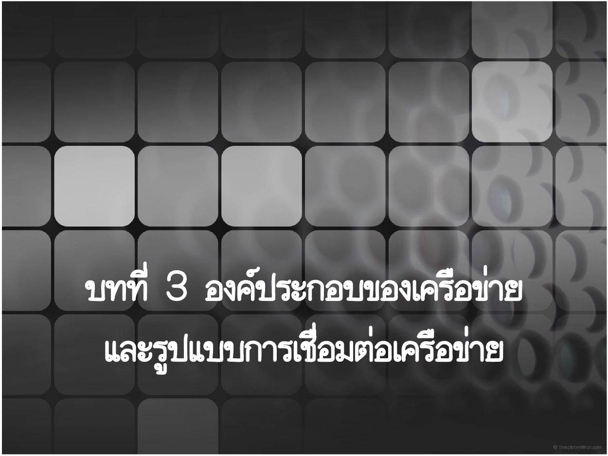
คลิกภาพเพื่อเปิดขยาย
อ่านข้อความต้นฉบับที่สกัดได้ (ไทย/อังกฤษตามไฟล์) บทที่ 3 องค์ประกอบของเครือข่าย
และรูปแบบการเชือ่ มต่อเครือข่าย ทบทวนภาษาไทย: บทนำการสื่อสารข้อมูลและเครือข่าย Switching และการส่งผ่านเครือข่าย อุปกรณ์เชื่อม LAN, Backbone และ VLAN
กลับสารบัญ ↑ หน้า 2 — องค์ประกอบพืน้ ฐานของเครือข่าย ดูภาพต้นฉบับหน้า 2 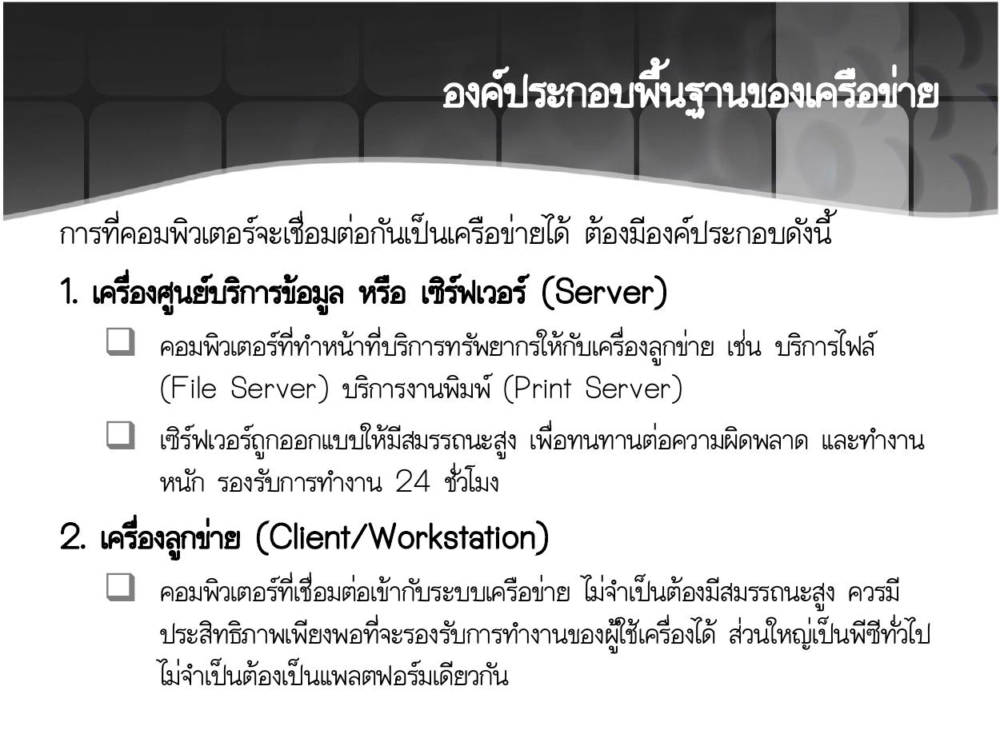
คลิกภาพเพื่อเปิดขยาย
อ่านข้อความต้นฉบับที่สกัดได้ (ไทย/อังกฤษตามไฟล์) องค์ประกอบพืน้ ฐานของเครือข่าย
การที่คอมพิวเตอร์จะเชื่อมต่อกันเป็นเครือข่ายได้ ต้องมีองค์ประกอบดังนี้
1. เครือ่ งศูนย์บริการข้อมูล หรือ เซิรฟ์ เวอร์ (Server)
คอมพิวเตอร์ที่ทาหน้าที่บริการทรัพยากรให้กับเครื่องลูกข่าย เช่น บริการไฟล์
(File Server) บริการงานพิมพ์ (Print Server)
เซิร์ฟเวอร์ถูกออกแบบให้มีสมรรถนะสูง เพื่อทนทานต่อความผิดพลาด และทางาน
หนัก รองรับการทางาน 24 ชั่วโมง
2. เครือ่ งลูกข่าย (Client/Workstation)
คอมพิวเตอร์ที่เชื่อมต่อเข้ากับระบบเครือข่าย ไม่จาเป็นต้องมีสมรรถนะสูง ควรมี
ประสิทธิภาพเพียงพอที่จะรองรับการทางานของผูใ้ ช้เครื่องได้ ส่วนใหญ่เป็นพีซีทั่วไป
ไม่จาเป็นต้องเป็นแพลตฟอร์มเดียวกัน ทบทวนภาษาไทย: บทนำการสื่อสารข้อมูลและเครือข่าย Switching และการส่งผ่านเครือข่าย อุปกรณ์เชื่อม LAN, Backbone และ VLAN
กลับสารบัญ ↑ หน้า 3 — องค์ประกอบพืน้ ฐานของเครือข่าย ดูภาพต้นฉบับหน้า 3 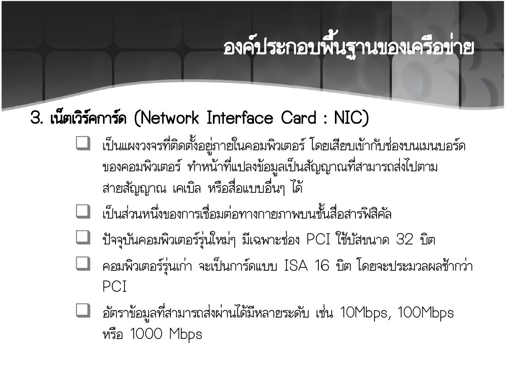
คลิกภาพเพื่อเปิดขยาย
อ่านข้อความต้นฉบับที่สกัดได้ (ไทย/อังกฤษตามไฟล์) องค์ประกอบพืน้ ฐานของเครือข่าย
3. เน็ตเวิรค์ การ์ด (Network Interface Card : NIC)
เป็นแผงวงจรที่ติดตั้งอยู่ภายในคอมพิวเตอร์ โดยเสียบเข้ากับช่องบนเมนบอร์ด
ของคอมพิวเตอร์ ทาหน้าที่แปลงข้อมูลเป็นสัญญาณทีส่ ามารถส่งไปตาม
สายสัญญาณ เคเบิล หรือสื่อแบบอื่นๆ ได้
เป็นส่วนหนึง่ ของการเชื่อมต่อทางกายภาพบนชั้นสื่อสารฟิสิคัล
ปัจจุบันคอมพิวเตอร์รนุ่ ใหม่ๆ มีเฉพาะช่อง PCI ใช้บัสขนาด 32 บิต
คอมพิวเตอร์รุ่นเก่า จะเป็นการ์ดแบบ ISA 16 บิต โดยจะประมวลผลช้ากว่า
PCI
อัตราข้อมูลทีส่ ามารถส่งผ่านได้มีหลายระดับ เช่น 10Mbps, 100Mbps
หรือ 1000 Mbps ทบทวนภาษาไทย: บทนำการสื่อสารข้อมูลและเครือข่าย Switching และการส่งผ่านเครือข่าย อุปกรณ์เชื่อม LAN, Backbone และ VLAN
กลับสารบัญ ↑ หน้า 4 — องค์ประกอบพืน้ ฐานของเครือข่าย ดูภาพต้นฉบับหน้า 4 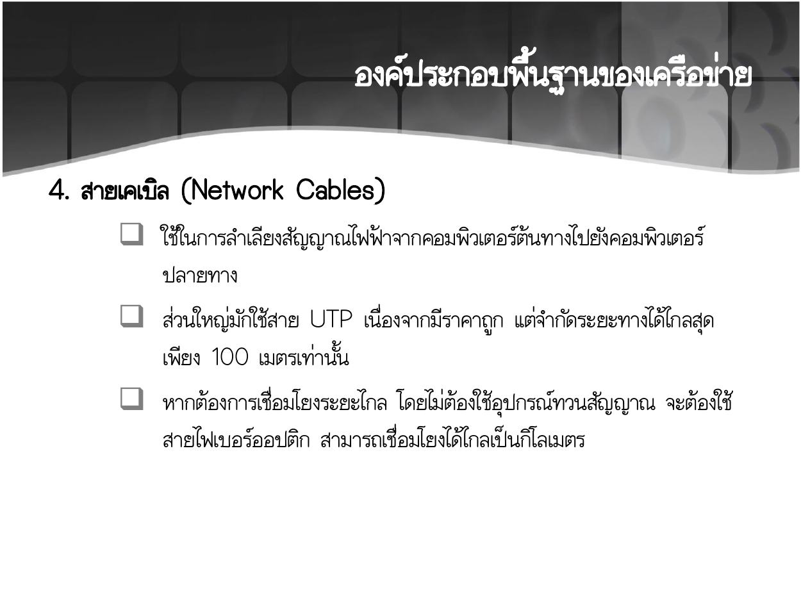
คลิกภาพเพื่อเปิดขยาย
อ่านข้อความต้นฉบับที่สกัดได้ (ไทย/อังกฤษตามไฟล์) องค์ประกอบพืน้ ฐานของเครือข่าย
4. สายเคเบิล (Network Cables)
ใช้ในการลาเลียงสัญญาณไฟฟ้าจากคอมพิวเตอร์ต้นทางไปยังคอมพิวเตอร์
ปลายทาง
ส่วนใหญ่มักใช้สาย UTP เนื่องจากมีราคาถูก แต่จากัดระยะทางได้ไกลสุด
เพียง 100 เมตรเท่านัน้
หากต้องการเชื่อมโยงระยะไกล โดยไม่ต้องใช้อุปกรณ์ทวนสัญญาณ จะต้องใช้
สายไฟเบอร์ออปติก สามารถเชื่อมโยงได้ไกลเป็นกิโลเมตร ทบทวนภาษาไทย: บทนำการสื่อสารข้อมูลและเครือข่าย Switching และการส่งผ่านเครือข่าย อุปกรณ์เชื่อม LAN, Backbone และ VLAN
กลับสารบัญ ↑ หน้า 5 — องค์ประกอบพืน้ ฐานของเครือข่าย ดูภาพต้นฉบับหน้า 5 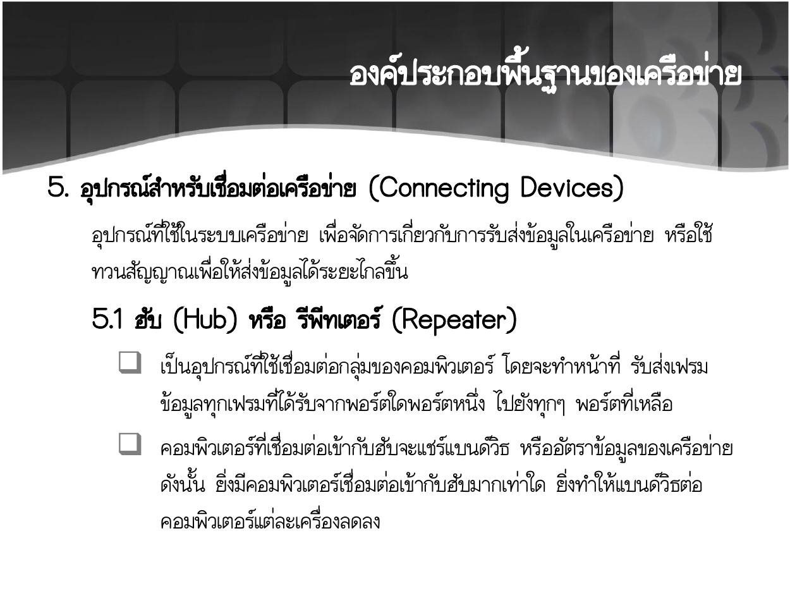
คลิกภาพเพื่อเปิดขยาย
อ่านข้อความต้นฉบับที่สกัดได้ (ไทย/อังกฤษตามไฟล์) องค์ประกอบพืน้ ฐานของเครือข่าย
5. อุปกรณ์สาหรับเชือ่ มต่อเครือข่าย (Connecting Devices)
อุปกรณ์ที่ใช้ในระบบเครือข่าย เพื่อจัดการเกี่ยวกับการรับส่งข้อมูลในเครือข่าย หรือใช้
ทวนสัญญาณเพื่อให้ส่งข้อมูลได้ระยะไกลขึ้น
5.1 ฮับ (Hub) หรือ รีพีทเตอร์ (Repeater)
เป็นอุปกรณ์ทใี่ ช้เชื่อมต่อกลุ่มของคอมพิวเตอร์ โดยจะทาหน้าที่ รับส่งเฟรม
ข้อมูลทุกเฟรมที่ได้รับจากพอร์ตใดพอร์ตหนึ่ง ไปยังทุกๆ พอร์ตที่เหลือ
คอมพิวเตอร์ที่เชื่อมต่อเข้ากับฮับจะแชร์แบนด์วิธ หรืออัตราข้อมูลของเครือข่าย
ดังนั้น ยิง่ มีคอมพิวเตอร์เชื่อมต่อเข้ากับฮับมากเท่าใด ยิ่งทาให้แบนด์วิธต่อ
คอมพิวเตอร์แต่ละเครื่องลดลง ทบทวนภาษาไทย: บทนำการสื่อสารข้อมูลและเครือข่าย Switching และการส่งผ่านเครือข่าย อุปกรณ์เชื่อม LAN, Backbone และ VLAN
กลับสารบัญ ↑ หน้า 6 — องค์ประกอบพืน้ ฐานของเครือข่าย ดูภาพต้นฉบับหน้า 6 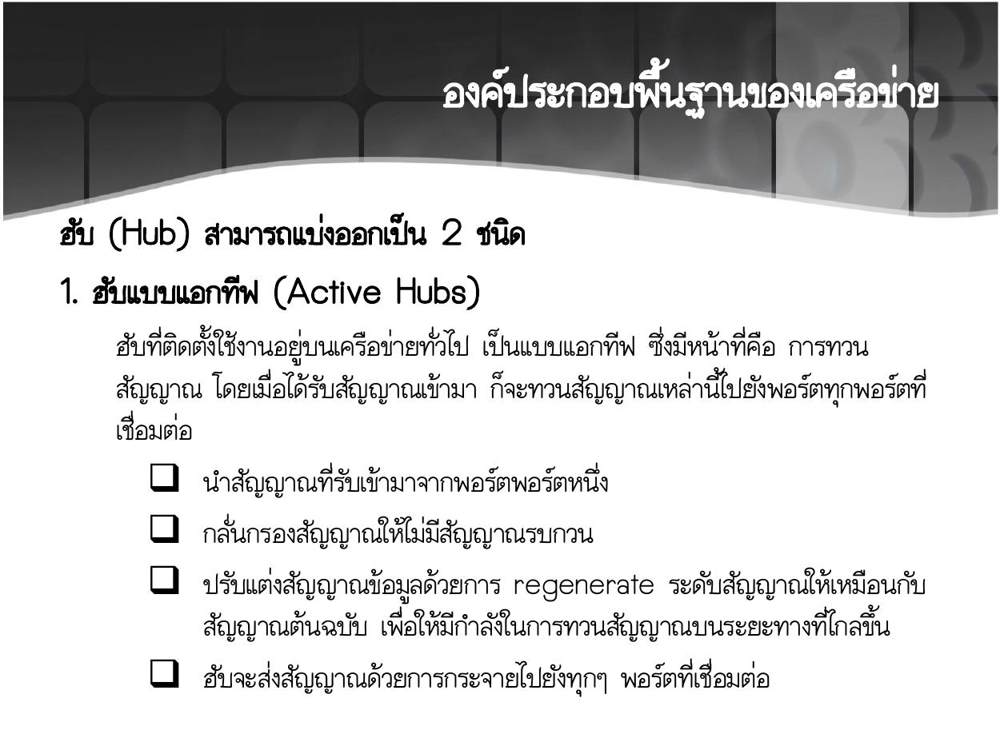
คลิกภาพเพื่อเปิดขยาย
อ่านข้อความต้นฉบับที่สกัดได้ (ไทย/อังกฤษตามไฟล์) องค์ประกอบพืน้ ฐานของเครือข่าย
ฮับ (Hub) สามารถแบ่งออกเป็น 2 ชนิด
1. ฮับแบบแอกทีฟ (Active Hubs)
ฮับที่ติดตั้งใช้งานอยู่บนเครือข่ายทั่วไป เป็นแบบแอกทีฟ ซึ่งมีหน้าที่คือ การทวน
สัญญาณ โดยเมื่อได้รับสัญญาณเข้ามา ก็จะทวนสัญญาณเหล่านี้ไปยังพอร์ตทุกพอร์ตที่
เชื่อมต่อ
นาสัญญาณทีร่ ับเข้ามาจากพอร์ตพอร์ตหนึ่ง
กลั่นกรองสัญญาณให้ไม่มสี ัญญาณรบกวน
ปรับแต่งสัญญาณข้อมูลด้วยการ regenerate ระดับสัญญาณให้เหมือนกับ
สัญญาณต้นฉบับ เพื่อให้มีกาลังในการทวนสัญญาณบนระยะทางที่ไกลขึน้
ฮับจะส่งสัญญาณด้วยการกระจายไปยังทุกๆ พอร์ตที่เชื่อมต่อ ทบทวนภาษาไทย: บทนำการสื่อสารข้อมูลและเครือข่าย Switching และการส่งผ่านเครือข่าย อุปกรณ์เชื่อม LAN, Backbone และ VLAN
กลับสารบัญ ↑ หน้า 7 — องค์ประกอบพืน้ ฐานของเครือข่าย ดูภาพต้นฉบับหน้า 7 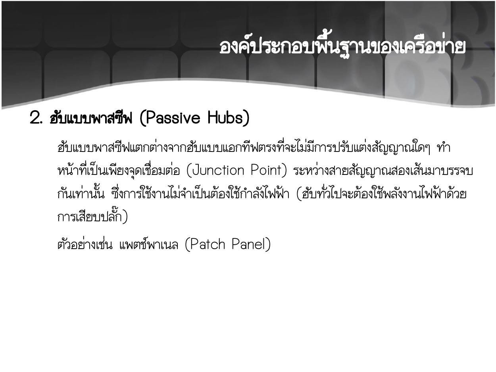
คลิกภาพเพื่อเปิดขยาย
อ่านข้อความต้นฉบับที่สกัดได้ (ไทย/อังกฤษตามไฟล์) องค์ประกอบพืน้ ฐานของเครือข่าย
2. ฮับแบบพาสซีฟ (Passive Hubs)
ฮับแบบพาสซีฟแตกต่างจากฮับแบบแอกทีฟตรงที่จะไม่มีการปรับแต่งสัญญาณใดๆ ทา
หน้าที่เป็นเพียงจุดเชื่อมต่อ (Junction Point) ระหว่างสายสัญญาณสองเส้นมาบรรจบ
กันเท่านัน้ ซึ่งการใช้งานไม่จาเป็นต้องใช้กาลังไฟฟ้า (ฮับทั่วไปจะต้องใช้พลังงานไฟฟ้าด้วย
การเสียบปลั๊ก)
ตัวอย่างเช่น แพตช์พาเนล (Patch Panel) ทบทวนภาษาไทย: บทนำการสื่อสารข้อมูลและเครือข่าย Switching และการส่งผ่านเครือข่าย อุปกรณ์เชื่อม LAN, Backbone และ VLAN
กลับสารบัญ ↑ หน้า 8 — องค์ประกอบพืน้ ฐานของเครือข่าย ดูภาพต้นฉบับหน้า 8 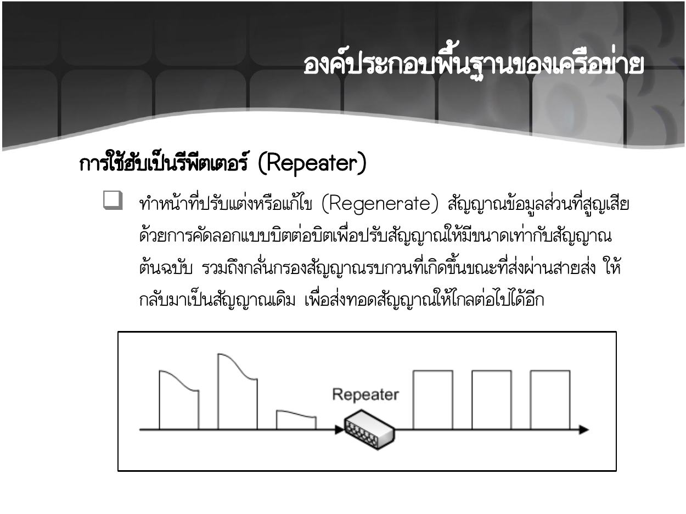
คลิกภาพเพื่อเปิดขยาย
อ่านข้อความต้นฉบับที่สกัดได้ (ไทย/อังกฤษตามไฟล์) องค์ประกอบพืน้ ฐานของเครือข่าย
การใช้ฮบั เป็นรีพตี เตอร์ (Repeater)
ทาหน้าที่ปรับแต่งหรือแก้ไข (Regenerate) สัญญาณข้อมูลส่วนที่สญ ู เสีย
ด้วยการคัดลอกแบบบิตต่อบิตเพื่อปรับสัญญาณให้มีขนาดเท่ากับสัญญาณ
ต้นฉบับ รวมถึงกลัน่ กรองสัญญาณรบกวนทีเ่ กิดขึ้นขณะที่ส่งผ่านสายส่ง ให้
กลับมาเป็นสัญญาณเดิม เพื่อส่งทอดสัญญาณให้ไกลต่อไปได้อีก ทบทวนภาษาไทย: บทนำการสื่อสารข้อมูลและเครือข่าย Switching และการส่งผ่านเครือข่าย อุปกรณ์เชื่อม LAN, Backbone และ VLAN
กลับสารบัญ ↑ หน้า 9 — องค์ประกอบพืน้ ฐานของเครือข่าย ดูภาพต้นฉบับหน้า 9 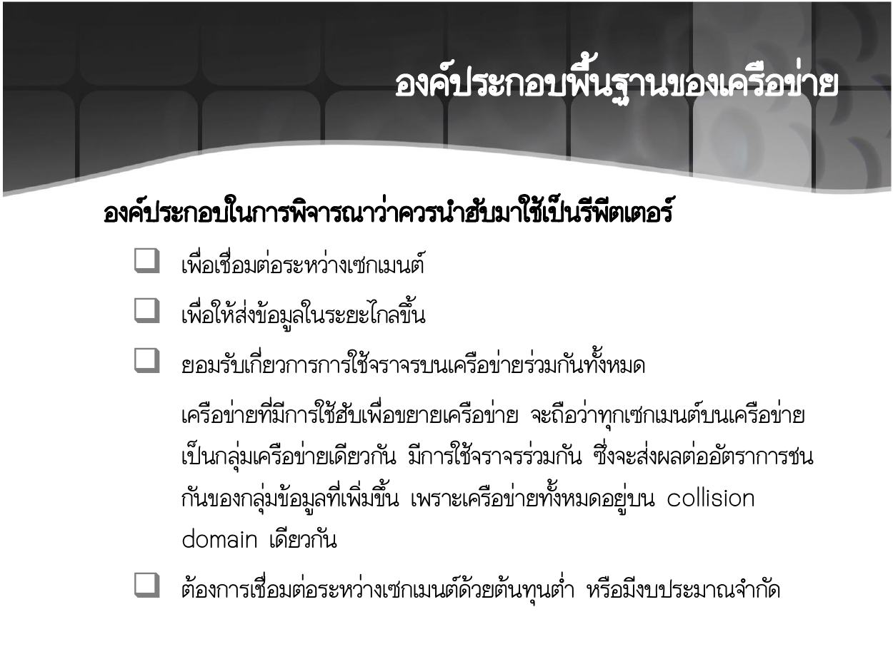
คลิกภาพเพื่อเปิดขยาย
อ่านข้อความต้นฉบับที่สกัดได้ (ไทย/อังกฤษตามไฟล์) องค์ประกอบพืน้ ฐานของเครือข่าย
องค์ประกอบในการพิจารณาว่าควรนาฮับมาใช้เป็นรีพตี เตอร์
เพื่อเชื่อมต่อระหว่างเซกเมนต์
เพื่อให้ส่งข้อมูลในระยะไกลขึ้น
ยอมรับเกี่ยวการการใช้จราจรบนเครือข่ายร่วมกันทัง้ หมด
เครือข่ายทีม่ ีการใช้ฮับเพื่อขยายเครือข่าย จะถือว่าทุกเซกเมนต์บนเครือข่าย
เป็นกลุ่มเครือข่ายเดียวกัน มีการใช้จราจรร่วมกัน ซึง่ จะส่งผลต่ออัตราการชน
กันของกลุ่มข้อมูลที่เพิ่มขึน้ เพราะเครือข่ายทัง้ หมดอยู่บน collision
domain เดียวกัน
ต้องการเชื่อมต่อระหว่างเซกเมนต์ด้วยต้นทุนต่า หรือมีงบประมาณจากัด ทบทวนภาษาไทย: บทนำการสื่อสารข้อมูลและเครือข่าย Switching และการส่งผ่านเครือข่าย อุปกรณ์เชื่อม LAN, Backbone และ VLAN
กลับสารบัญ ↑ หน้า 10 — องค์ประกอบพืน้ ฐานของเครือข่าย ดูภาพต้นฉบับหน้า 10 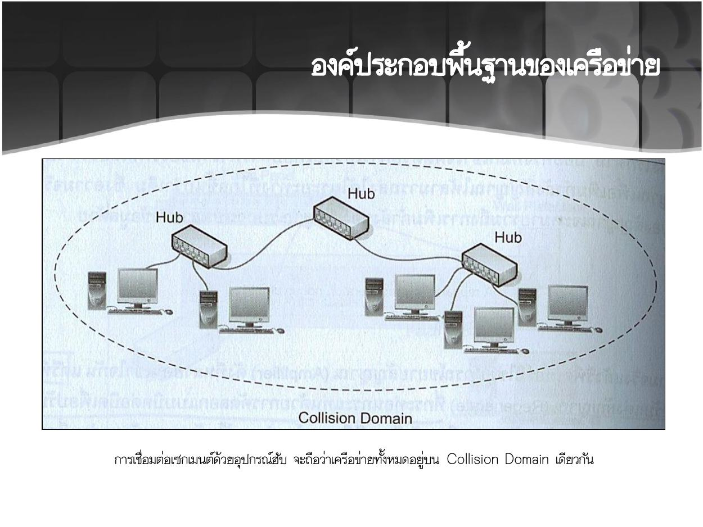
คลิกภาพเพื่อเปิดขยาย
อ่านข้อความต้นฉบับที่สกัดได้ (ไทย/อังกฤษตามไฟล์) องค์ประกอบพืน้ ฐานของเครือข่าย
การเชื่อมต่อเซกเมนต์ด้วยอุปกรณ์ฮับ จะถือว่าเครือข่ายทั้งหมดอยู่บน Collision Domain เดียวกัน ทบทวนภาษาไทย: บทนำการสื่อสารข้อมูลและเครือข่าย Switching และการส่งผ่านเครือข่าย อุปกรณ์เชื่อม LAN, Backbone และ VLAN
กลับสารบัญ ↑ หน้า 11 — องค์ประกอบพืน้ ฐานของเครือข่าย ดูภาพต้นฉบับหน้า 11 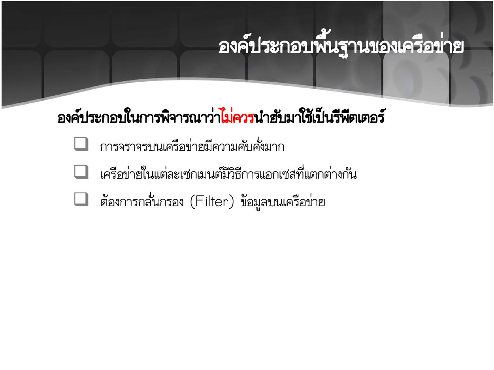
คลิกภาพเพื่อเปิดขยาย
อ่านข้อความต้นฉบับที่สกัดได้ (ไทย/อังกฤษตามไฟล์) องค์ประกอบพืน้ ฐานของเครือข่าย
องค์ประกอบในการพิจารณาว่าไม่ควรนาฮับมาใช้เป็นรีพตี เตอร์
การจราจรบนเครือข่ายมีความคับคั่งมาก
เครือข่ายในแต่ละเซกเมนต์มีวธิ ีการแอกเซสที่แตกต่างกัน
ต้องการกลั่นกรอง (Filter) ข้อมูลบนเครือข่าย ทบทวนภาษาไทย: บทนำการสื่อสารข้อมูลและเครือข่าย Switching และการส่งผ่านเครือข่าย อุปกรณ์เชื่อม LAN, Backbone และ VLAN
กลับสารบัญ ↑ หน้า 12 — องค์ประกอบพืน้ ฐานของเครือข่าย ดูภาพต้นฉบับหน้า 12 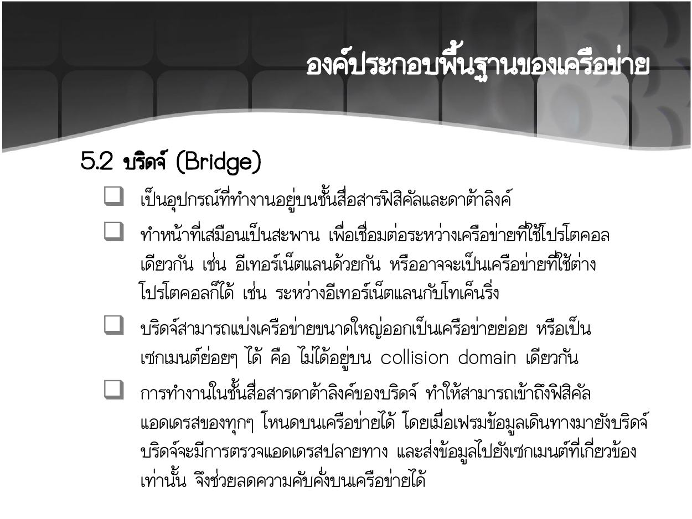
คลิกภาพเพื่อเปิดขยาย
อ่านข้อความต้นฉบับที่สกัดได้ (ไทย/อังกฤษตามไฟล์) องค์ประกอบพืน้ ฐานของเครือข่าย
5.2 บริดจ์ (Bridge)
เป็นอุปกรณ์ที่ทางานอยู่บนชัน้ สื่อสารฟิสิคัลและดาต้าลิงค์
ทาหน้าที่เสมือนเป็นสะพาน เพื่อเชื่อมต่อระหว่างเครือข่ายที่ใช้โปรโตคอล
เดียวกัน เช่น อีเทอร์เน็ตแลนด้วยกัน หรืออาจจะเป็นเครือข่ายทีใ่ ช้ต่าง
โปรโตคอลก็ได้ เช่น ระหว่างอีเทอร์เน็ตแลนกับโทเค็นริ่ง
บริดจ์สามารถแบ่งเครือข่ายขนาดใหญ่ออกเป็นเครือข่ายย่อย หรือเป็น
เซกเมนต์ย่อยๆ ได้ คือ ไม่ได้อยู่บน collision domain เดียวกัน
การทางานในชัน้ สื่อสารดาต้าลิงค์ของบริดจ์ ทาให้สามารถเข้าถึงฟิสิคัล
แอดเดรสของทุกๆ โหนดบนเครือข่ายได้ โดยเมื่อเฟรมข้อมูลเดินทางมายังบริดจ์
บริดจ์จะมีการตรวจแอดเดรสปลายทาง และส่งข้อมูลไปยังเซกเมนต์ที่เกี่ยวข้อง
เท่านัน้ จึงช่วยลดความคับคั่งบนเครือข่ายได้ ทบทวนภาษาไทย: บทนำการสื่อสารข้อมูลและเครือข่าย Switching และการส่งผ่านเครือข่าย อุปกรณ์เชื่อม LAN, Backbone และ VLAN
กลับสารบัญ ↑ หน้า 13 — องค์ประกอบพืน้ ฐานของเครือข่าย ดูภาพต้นฉบับหน้า 13 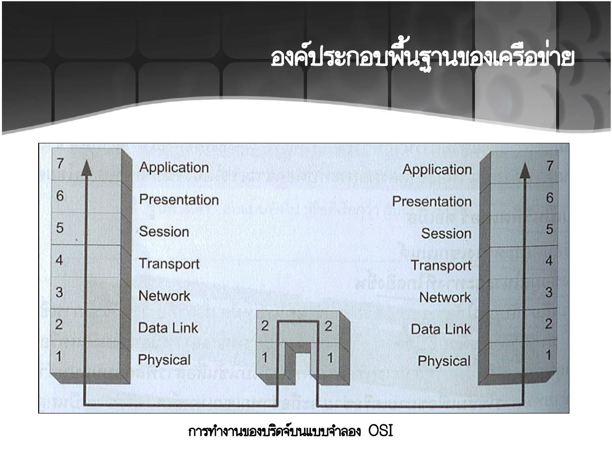
คลิกภาพเพื่อเปิดขยาย
อ่านข้อความต้นฉบับที่สกัดได้ (ไทย/อังกฤษตามไฟล์) องค์ประกอบพืน้ ฐานของเครือข่าย
การทางานของบริดจ์บนแบบจาลอง OSI ทบทวนภาษาไทย: บทนำการสื่อสารข้อมูลและเครือข่าย Switching และการส่งผ่านเครือข่าย อุปกรณ์เชื่อม LAN, Backbone และ VLAN
กลับสารบัญ ↑ หน้า 14 — องค์ประกอบพืน้ ฐานของเครือข่าย ดูภาพต้นฉบับหน้า 14 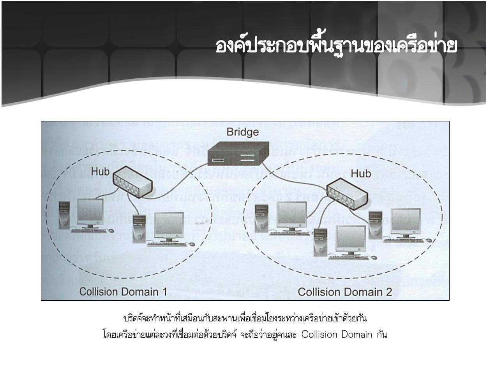
คลิกภาพเพื่อเปิดขยาย
อ่านข้อความต้นฉบับที่สกัดได้ (ไทย/อังกฤษตามไฟล์) องค์ประกอบพืน้ ฐานของเครือข่าย
บริดจ์จะทาหน้าที่เสมือนกับสะพานเพื่อเชื่อมโยงระหว่างเครือข่ายเข้าด้วยกัน
โดยเครือข่ายแต่ละวงที่เชื่อมต่อด้วยบริดจ์ จะถือว่าอยู่คนละ Collision Domain กัน ทบทวนภาษาไทย: บทนำการสื่อสารข้อมูลและเครือข่าย Switching และการส่งผ่านเครือข่าย อุปกรณ์เชื่อม LAN, Backbone และ VLAN
กลับสารบัญ ↑ หน้า 15 — องค์ประกอบพืน้ ฐานของเครือข่าย ดูภาพต้นฉบับหน้า 15 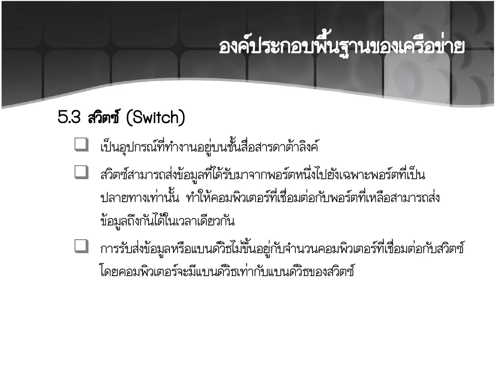
คลิกภาพเพื่อเปิดขยาย
อ่านข้อความต้นฉบับที่สกัดได้ (ไทย/อังกฤษตามไฟล์) องค์ประกอบพืน้ ฐานของเครือข่าย
5.3 สวิตซ์ (Switch)
เป็นอุปกรณ์ที่ทางานอยู่บนชัน้ สื่อสารดาต้าลิงค์
สวิตซ์สามารถส่งข้อมูลที่ได้รับมาจากพอร์ตหนึ่งไปยังเฉพาะพอร์ตที่เป็น
ปลายทางเท่านัน้ ทาให้คอมพิวเตอร์ที่เชื่อมต่อกับพอร์ตที่เหลือสามารถส่ง
ข้อมูลถึงกันได้ในเวลาเดียวกัน
การรับส่งข้อมูลหรือแบนด์วธิ ไม่ขนึ้ อยู่กับจานวนคอมพิวเตอร์ที่เชื่อมต่อกับสวิตซ์
โดยคอมพิวเตอร์จะมีแบนด์วิธเท่ากับแบนด์วิธของสวิตซ์ ทบทวนภาษาไทย: บทนำการสื่อสารข้อมูลและเครือข่าย Switching และการส่งผ่านเครือข่าย อุปกรณ์เชื่อม LAN, Backbone และ VLAN
กลับสารบัญ ↑ หน้า 16 — องค์ประกอบพืน้ ฐานของเครือข่าย ดูภาพต้นฉบับหน้า 16 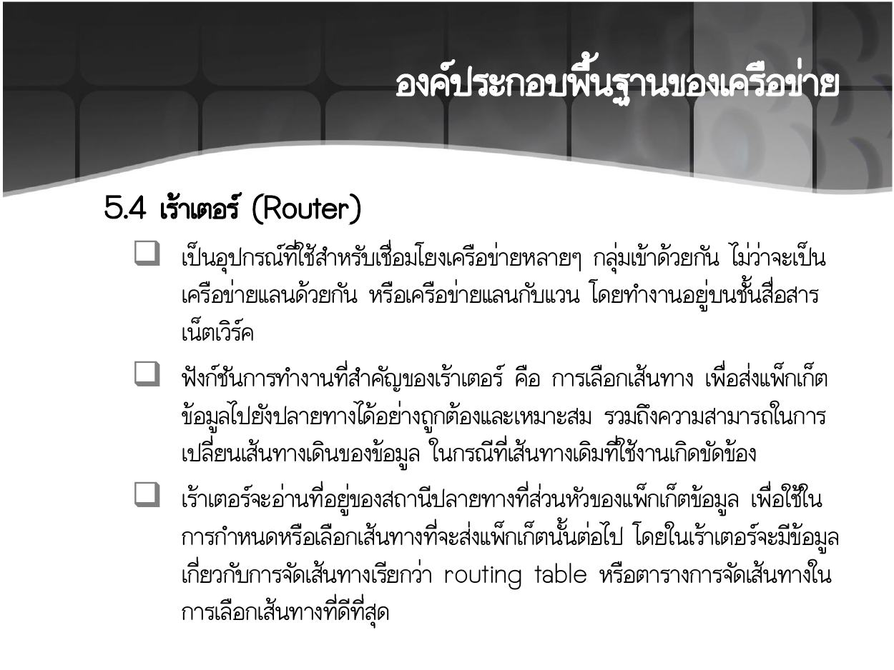
คลิกภาพเพื่อเปิดขยาย
อ่านข้อความต้นฉบับที่สกัดได้ (ไทย/อังกฤษตามไฟล์) องค์ประกอบพืน้ ฐานของเครือข่าย
5.4 เร้าเตอร์ (Router)
เป็นอุปกรณ์ทใี่ ช้สาหรับเชื่อมโยงเครือข่ายหลายๆ กลุ่มเข้าด้วยกัน ไม่วา่ จะเป็น
เครือข่ายแลนด้วยกัน หรือเครือข่ายแลนกับแวน โดยทางานอยู่บนชั้นสื่อสาร
เน็ตเวิร์ค
ฟังก์ชันการทางานที่สาคัญของเร้าเตอร์ คือ การเลือกเส้นทาง เพื่อส่งแพ็กเก็ต
ข้อมูลไปยังปลายทางได้อย่างถูกต้องและเหมาะสม รวมถึงความสามารถในการ
เปลี่ยนเส้นทางเดินของข้อมูล ในกรณีที่เส้นทางเดิมที่ใช้งานเกิดขัดข้อง
เร้าเตอร์จะอ่านที่อยูข่ องสถานีปลายทางที่สว่ นหัวของแพ็กเก็ตข้อมูล เพื่อใช้ใน
การกาหนดหรือเลือกเส้นทางทีจ่ ะส่งแพ็กเก็ตนั้นต่อไป โดยในเร้าเตอร์จะมีข้อมูล
เกี่ยวกับการจัดเส้นทางเรียกว่า routing table หรือตารางการจัดเส้นทางใน
การเลือกเส้นทางที่ดีทสี่ ุด ทบทวนภาษาไทย: บทนำการสื่อสารข้อมูลและเครือข่าย Switching และการส่งผ่านเครือข่าย อุปกรณ์เชื่อม LAN, Backbone และ VLAN
กลับสารบัญ ↑ หน้า 17 — องค์ประกอบพืน้ ฐานของเครือข่าย ดูภาพต้นฉบับหน้า 17 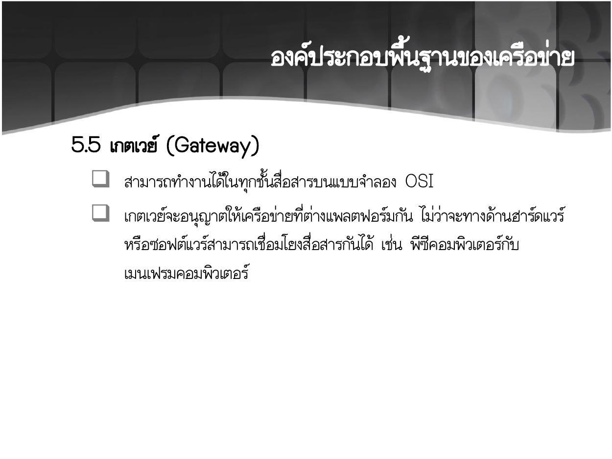
คลิกภาพเพื่อเปิดขยาย
อ่านข้อความต้นฉบับที่สกัดได้ (ไทย/อังกฤษตามไฟล์) องค์ประกอบพืน้ ฐานของเครือข่าย
5.5 เกตเวย์ (Gateway)
สามารถทางานได้ในทุกชั้นสื่อสารบนแบบจาลอง OSI
เกตเวย์จะอนุญาตให้เครือข่ายที่ต่างแพลตฟอร์มกัน ไม่ว่าจะทางด้านฮาร์ดแวร์
หรือซอฟต์แวร์สามารถเชื่อมโยงสื่อสารกันได้ เช่น พีซีคอมพิวเตอร์กับ
เมนเฟรมคอมพิวเตอร์ ทบทวนภาษาไทย: บทนำการสื่อสารข้อมูลและเครือข่าย Switching และการส่งผ่านเครือข่าย อุปกรณ์เชื่อม LAN, Backbone และ VLAN
กลับสารบัญ ↑ หน้า 18 — องค์ประกอบพืน้ ฐานของเครือข่าย ดูภาพต้นฉบับหน้า 18 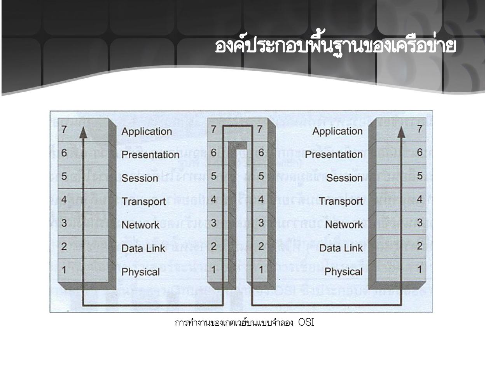
คลิกภาพเพื่อเปิดขยาย
อ่านข้อความต้นฉบับที่สกัดได้ (ไทย/อังกฤษตามไฟล์) องค์ประกอบพืน้ ฐานของเครือข่าย
การทางานของเกตเวย์บนแบบจาลอง OSI ทบทวนภาษาไทย: บทนำการสื่อสารข้อมูลและเครือข่าย Switching และการส่งผ่านเครือข่าย อุปกรณ์เชื่อม LAN, Backbone และ VLAN
กลับสารบัญ ↑ หน้า 19 — องค์ประกอบพืน้ ฐานของเครือข่าย ดูภาพต้นฉบับหน้า 19 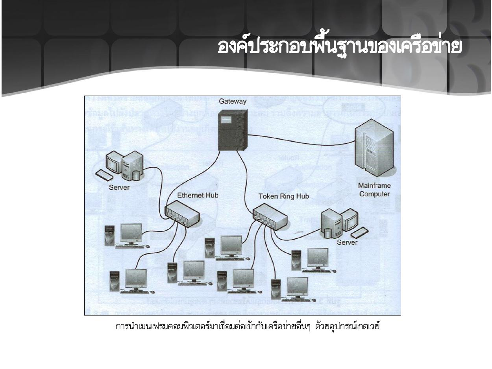
คลิกภาพเพื่อเปิดขยาย
อ่านข้อความต้นฉบับที่สกัดได้ (ไทย/อังกฤษตามไฟล์) องค์ประกอบพืน้ ฐานของเครือข่าย
การนาเมนเฟรมคอมพิวเตอร์มาเชื่อมต่อเข้ากับเครือข่ายอื่นๆ ด้วยอุปกรณ์เกตเวย์ ทบทวนภาษาไทย: บทนำการสื่อสารข้อมูลและเครือข่าย Switching และการส่งผ่านเครือข่าย อุปกรณ์เชื่อม LAN, Backbone และ VLAN
กลับสารบัญ ↑ หน้า 20 — องค์ประกอบพืน้ ฐานของเครือข่าย ดูภาพต้นฉบับหน้า 20 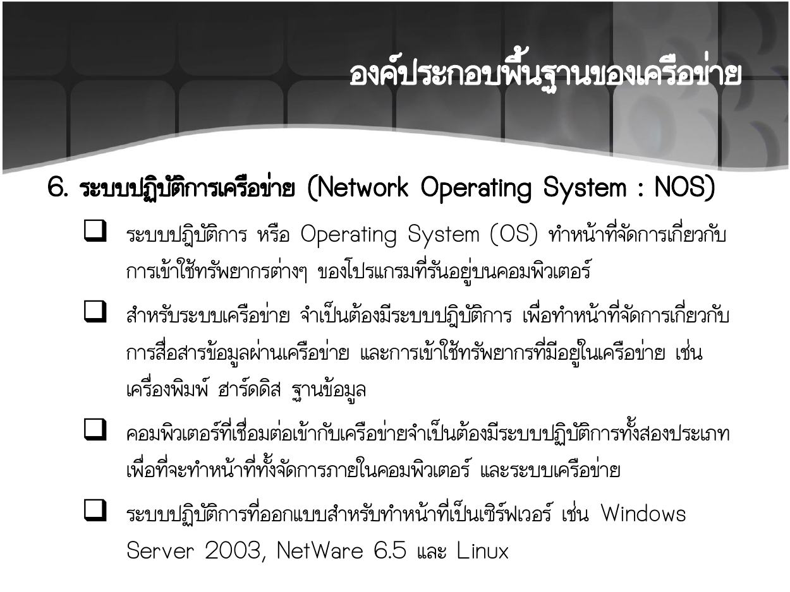
คลิกภาพเพื่อเปิดขยาย
อ่านข้อความต้นฉบับที่สกัดได้ (ไทย/อังกฤษตามไฟล์) องค์ประกอบพืน้ ฐานของเครือข่าย
6. ระบบปฏิบตั กิ ารเครือข่าย (Network Operating System : NOS)
ระบบปฎิบัติการ หรือ Operating System (OS) ทาหน้าทีจ่ ัดการเกี่ยวกับ
การเข้าใช้ทรัพยากรต่างๆ ของโปรแกรมที่รนั อยู่บนคอมพิวเตอร์
สาหรับระบบเครือข่าย จาเป็นต้องมีระบบปฎิบัติการ เพื่อทาหน้าที่จัดการเกี่ยวกับ
การสื่อสารข้อมูลผ่านเครือข่าย และการเข้าใช้ทรัพยากรที่มีอยูใ่ นเครือข่าย เช่น
เครื่องพิมพ์ ฮาร์ดดิส ฐานข้อมูล
คอมพิวเตอร์ที่เชื่อมต่อเข้ากับเครือข่ายจาเป็นต้องมีระบบปฏิบัติการทัง้ สองประเภท
เพื่อที่จะทาหน้าทีท่ ั้งจัดการภายในคอมพิวเตอร์ และระบบเครือข่าย
ระบบปฏิบัติการที่ออกแบบสาหรับทาหน้าทีเ่ ป็นเซิร์ฟเวอร์ เช่น Windows
Server 2003, NetWare 6.5 และ Linux ทบทวนภาษาไทย: บทนำการสื่อสารข้อมูลและเครือข่าย Switching และการส่งผ่านเครือข่าย อุปกรณ์เชื่อม LAN, Backbone และ VLAN
กลับสารบัญ ↑ หน้า 21 — การเชือ่ มต่อเครือข่าย ดูภาพต้นฉบับหน้า 21 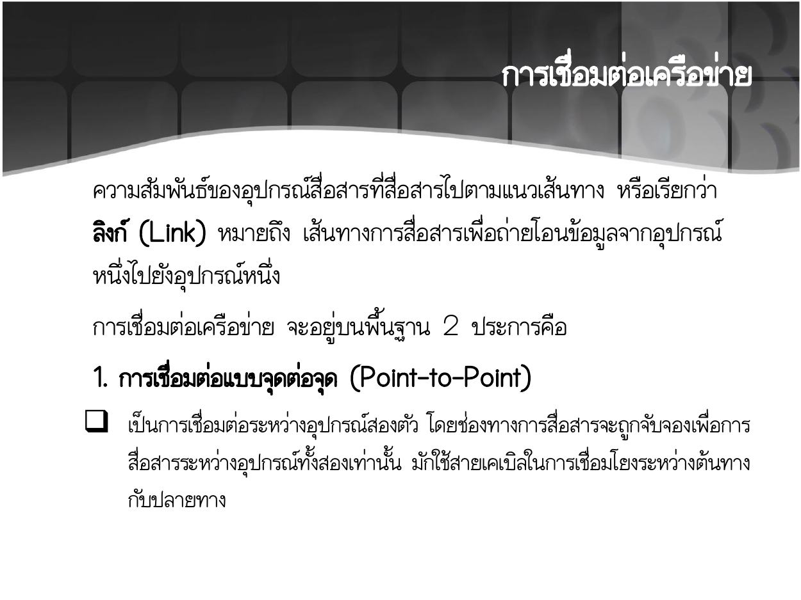
คลิกภาพเพื่อเปิดขยาย
อ่านข้อความต้นฉบับที่สกัดได้ (ไทย/อังกฤษตามไฟล์) การเชือ่ มต่อเครือข่าย
ความสัมพันธ์ของอุปกรณ์สื่อสารที่สื่อสารไปตามแนวเส้นทาง หรือเรียกว่า
ลิงก์ (Link) หมายถึง เส้นทางการสื่อสารเพื่อถ่ายโอนข้อมูลจากอุปกรณ์
หนึ่งไปยังอุปกรณ์หนึ่ง
การเชื่อมต่อเครือข่าย จะอยู่บนพื้นฐาน 2 ประการคือ
1. การเชื่อมต่อแบบจุดต่อจุด (Point-to-Point)
เป็นการเชื่อมต่อระหว่างอุปกรณ์สองตัว โดยช่องทางการสื่อสารจะถูกจับจองเพื่อการ
สื่อสารระหว่างอุปกรณ์ทั้งสองเท่านัน้ มักใช้สายเคเบิลในการเชื่อมโยงระหว่างต้นทาง
กับปลายทาง ทบทวนภาษาไทย: บทนำการสื่อสารข้อมูลและเครือข่าย Switching และการส่งผ่านเครือข่าย อุปกรณ์เชื่อม LAN, Backbone และ VLAN
กลับสารบัญ ↑ หน้า 22 — การเชือ่ มต่อเครือข่าย ดูภาพต้นฉบับหน้า 22 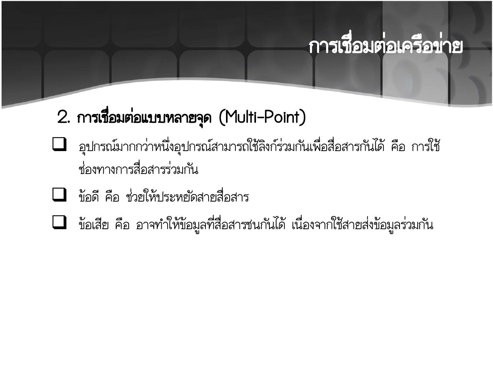
คลิกภาพเพื่อเปิดขยาย
อ่านข้อความต้นฉบับที่สกัดได้ (ไทย/อังกฤษตามไฟล์) การเชือ่ มต่อเครือข่าย
2. การเชือ่ มต่อแบบหลายจุด (Multi-Point)
อุปกรณ์มากกว่าหนึ่งอุปกรณ์สามารถใช้ลงิ ก์ร่วมกันเพื่อสื่อสารกันได้ คือ การใช้
ช่องทางการสื่อสารร่วมกัน
ข้อดี คือ ช่วยให้ประหยัดสายสื่อสาร
ข้อเสีย คือ อาจทาให้ข้อมูลที่สื่อสารชนกันได้ เนื่องจากใช้สายส่งข้อมูลร่วมกัน ทบทวนภาษาไทย: บทนำการสื่อสารข้อมูลและเครือข่าย Switching และการส่งผ่านเครือข่าย อุปกรณ์เชื่อม LAN, Backbone และ VLAN
กลับสารบัญ ↑ หน้า 23 — โทโพโลยีแบบบัส ดูภาพต้นฉบับหน้า 23 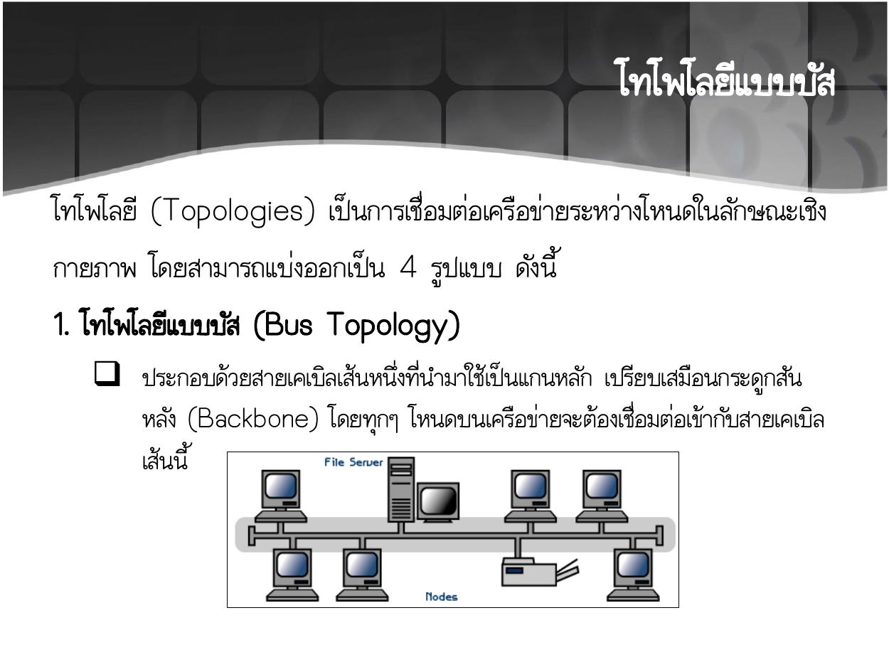
คลิกภาพเพื่อเปิดขยาย
อ่านข้อความต้นฉบับที่สกัดได้ (ไทย/อังกฤษตามไฟล์) โทโพโลยีแบบบัส
โทโพโลยี (Topologies) เป็นการเชื่อมต่อเครือข่ายระหว่างโหนดในลักษณะเชิง
กายภาพ โดยสามารถแบ่งออกเป็น 4 รูปแบบ ดังนี้
1. โทโพโลยีแบบบัส (Bus Topology)
ประกอบด้วยสายเคเบิลเส้นหนึ่งทีน่ ามาใช้เป็นแกนหลัก เปรียบเสมือนกระดูกสัน
หลัง (Backbone) โดยทุกๆ โหนดบนเครือข่ายจะต้องเชื่อมต่อเข้ากับสายเคเบิล
เส้นนี้ ทบทวนภาษาไทย: บทนำการสื่อสารข้อมูลและเครือข่าย Switching และการส่งผ่านเครือข่าย อุปกรณ์เชื่อม LAN, Backbone และ VLAN
กลับสารบัญ ↑ หน้า 24 — โทโพโลยีแบบบัส ดูภาพต้นฉบับหน้า 24 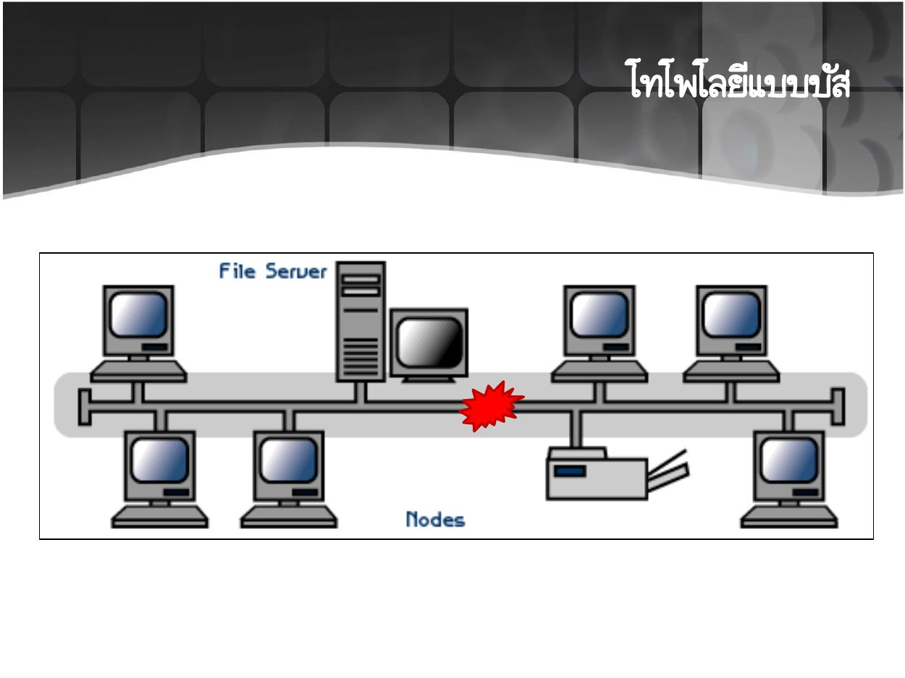
คลิกภาพเพื่อเปิดขยาย
อ่านข้อความต้นฉบับที่สกัดได้ (ไทย/อังกฤษตามไฟล์) โทโพโลยีแบบบัส ทบทวนภาษาไทย: บทนำการสื่อสารข้อมูลและเครือข่าย Switching และการส่งผ่านเครือข่าย อุปกรณ์เชื่อม LAN, Backbone และ VLAN
กลับสารบัญ ↑ หน้า 25 — โทโพโลยีแบบบัส ดูภาพต้นฉบับหน้า 25 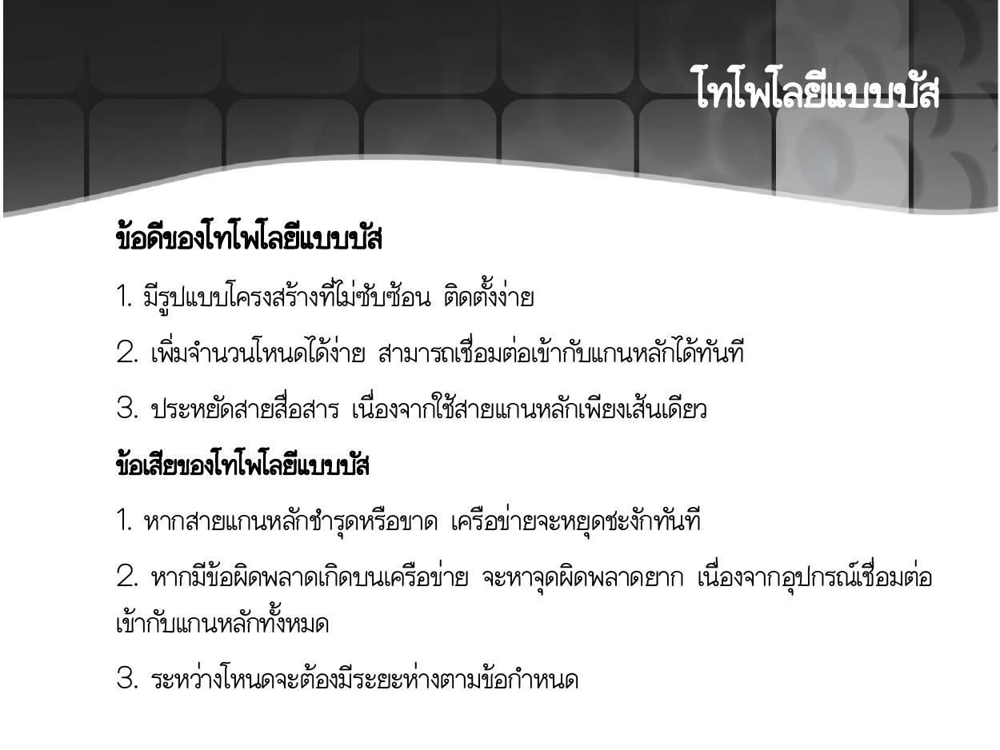
คลิกภาพเพื่อเปิดขยาย
อ่านข้อความต้นฉบับที่สกัดได้ (ไทย/อังกฤษตามไฟล์) โทโพโลยีแบบบัส
ข้อดีของโทโพโลยีแบบบัส
1. มีรูปแบบโครงสร้างที่ไม่ซับซ้อน ติดตั้งง่าย
2. เพิ่มจานวนโหนดได้ง่าย สามารถเชื่อมต่อเข้ากับแกนหลักได้ทันที
3. ประหยัดสายสื่อสาร เนื่องจากใช้สายแกนหลักเพียงเส้นเดียว
ข้อเสียของโทโพโลยีแบบบัส
1. หากสายแกนหลักชารุดหรือขาด เครือข่ายจะหยุดชะงักทันที
2. หากมีข้อผิดพลาดเกิดบนเครือข่าย จะหาจุดผิดพลาดยาก เนื่องจากอุปกรณ์เชื่อมต่อ
เข้ากับแกนหลักทั้งหมด
3. ระหว่างโหนดจะต้องมีระยะห่างตามข้อกาหนด ทบทวนภาษาไทย: บทนำการสื่อสารข้อมูลและเครือข่าย Switching และการส่งผ่านเครือข่าย อุปกรณ์เชื่อม LAN, Backbone และ VLAN
กลับสารบัญ ↑ หน้า 26 — โทโพโลยีแบบดาว ดูภาพต้นฉบับหน้า 26 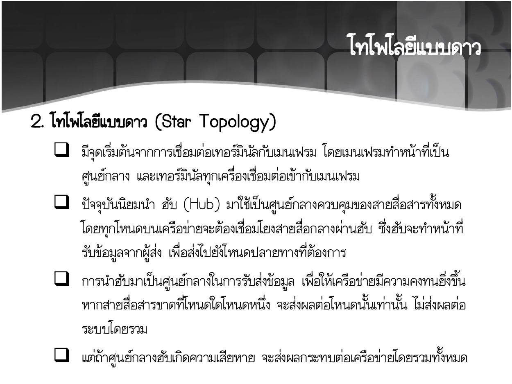
คลิกภาพเพื่อเปิดขยาย
อ่านข้อความต้นฉบับที่สกัดได้ (ไทย/อังกฤษตามไฟล์) โทโพโลยีแบบดาว
2. โทโพโลยีแบบดาว (Star Topology)
มีจุดเริ่มต้นจากการเชื่อมต่อเทอร์มนิ ลั กับเมนเฟรม โดยเมนเฟรมทาหน้าที่เป็น
ศูนย์กลาง และเทอร์มนิ ัลทุกเครื่องเชื่อมต่อเข้ากับเมนเฟรม
ปัจจุบันนิยมนา ฮับ (Hub) มาใช้เป็นศูนย์กลางควบคุมของสายสื่อสารทั้งหมด
โดยทุกโหนดบนเครือข่ายจะต้องเชื่อมโยงสายสื่อกลางผ่านฮับ ซึ่งฮับจะทาหน้าที่
รับข้อมูลจากผู้สง่ เพื่อส่งไปยังโหนดปลายทางที่ต้องการ
การนาฮับมาเป็นศูนย์กลางในการรับส่งข้อมูล เพื่อให้เครือข่ายมีความคงทนยิง่ ขึ้น
หากสายสื่อสารขาดที่โหนดใดโหนดหนึ่ง จะส่งผลต่อโหนดนั้นเท่านัน้ ไม่ส่งผลต่อ
ระบบโดยรวม
แต่ถ้าศูนย์กลางฮับเกิดความเสียหาย จะส่งผลกระทบต่อเครือข่ายโดยรวมทั้งหมด ทบทวนภาษาไทย: บทนำการสื่อสารข้อมูลและเครือข่าย Switching และการส่งผ่านเครือข่าย อุปกรณ์เชื่อม LAN, Backbone และ VLAN
กลับสารบัญ ↑ หน้า 27 — โทโพโลยีแบบดาว ดูภาพต้นฉบับหน้า 27 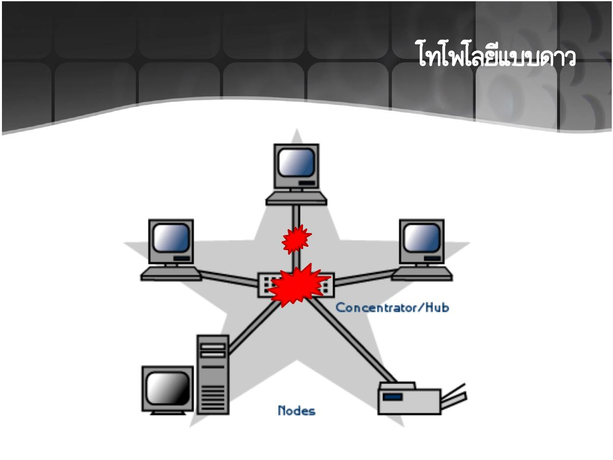
คลิกภาพเพื่อเปิดขยาย
อ่านข้อความต้นฉบับที่สกัดได้ (ไทย/อังกฤษตามไฟล์) โทโพโลยีแบบดาว ทบทวนภาษาไทย: บทนำการสื่อสารข้อมูลและเครือข่าย Switching และการส่งผ่านเครือข่าย อุปกรณ์เชื่อม LAN, Backbone และ VLAN
กลับสารบัญ ↑ หน้า 28 — โทโพโลยีแบบดาว ดูภาพต้นฉบับหน้า 28 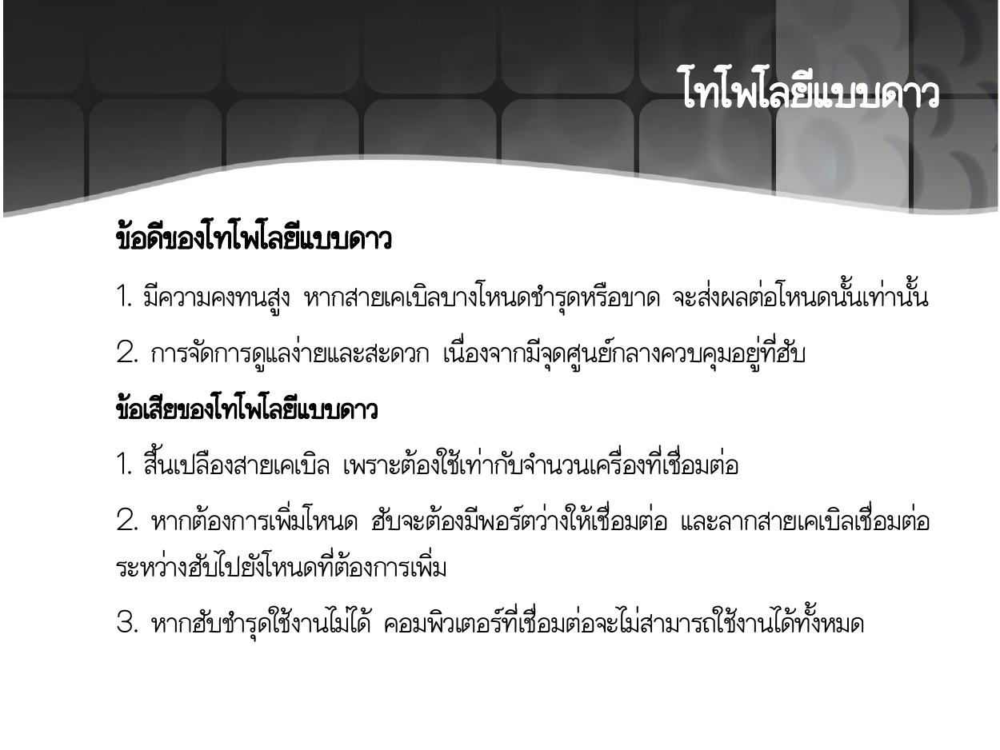
คลิกภาพเพื่อเปิดขยาย
อ่านข้อความต้นฉบับที่สกัดได้ (ไทย/อังกฤษตามไฟล์) โทโพโลยีแบบดาว
ข้อดีของโทโพโลยีแบบดาว
1. มีความคงทนสูง หากสายเคเบิลบางโหนดชารุดหรือขาด จะส่งผลต่อโหนดนัน้ เท่านั้น
2. การจัดการดูแลง่ายและสะดวก เนื่องจากมีจุดศูนย์กลางควบคุมอยูท่ ฮี่ ับ
ข้อเสียของโทโพโลยีแบบดาว
1. สื้นเปลืองสายเคเบิล เพราะต้องใช้เท่ากับจานวนเครื่องที่เชื่อมต่อ
2. หากต้องการเพิ่มโหนด ฮับจะต้องมีพอร์ตว่างให้เชื่อมต่อ และลากสายเคเบิลเชื่อมต่อ
ระหว่างฮับไปยังโหนดที่ต้องการเพิ่ม
3. หากฮับชารุดใช้งานไม่ได้ คอมพิวเตอร์ที่เชื่อมต่อจะไม่สามารถใช้งานได้ทั้งหมด ทบทวนภาษาไทย: บทนำการสื่อสารข้อมูลและเครือข่าย Switching และการส่งผ่านเครือข่าย อุปกรณ์เชื่อม LAN, Backbone และ VLAN
กลับสารบัญ ↑ หน้า 29 — โทโพโลยีแบบวงแหวน ดูภาพต้นฉบับหน้า 29 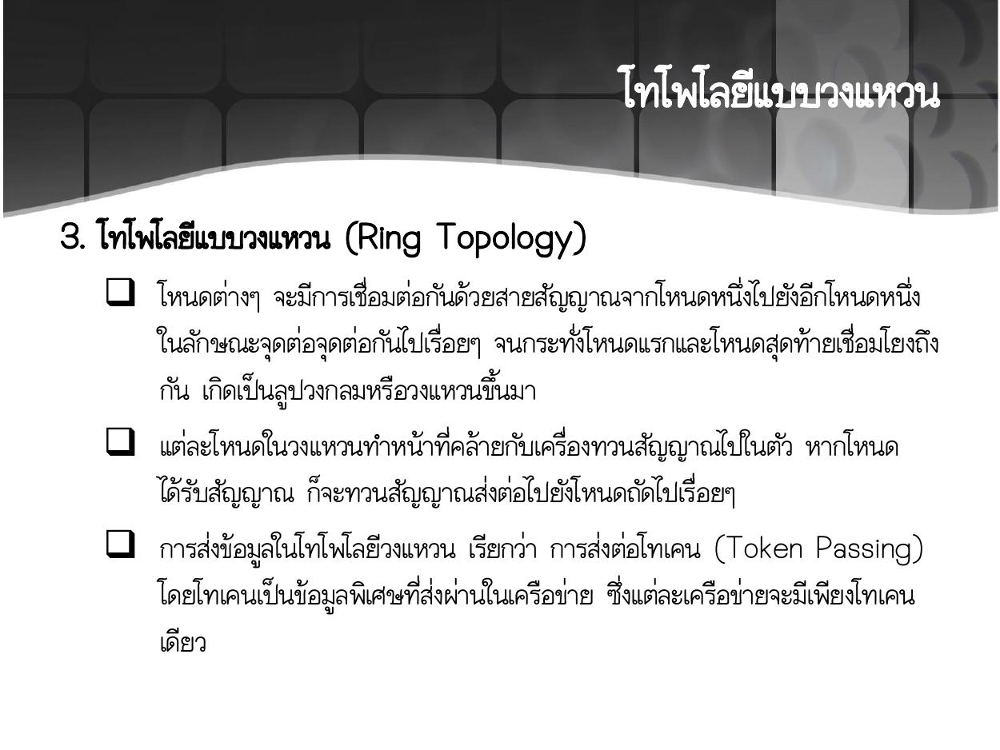
คลิกภาพเพื่อเปิดขยาย
อ่านข้อความต้นฉบับที่สกัดได้ (ไทย/อังกฤษตามไฟล์) โทโพโลยีแบบวงแหวน
3. โทโพโลยีแบบวงแหวน (Ring Topology)
โหนดต่างๆ จะมีการเชื่อมต่อกันด้วยสายสัญญาณจากโหนดหนึ่งไปยังอีกโหนดหนึง่
ในลักษณะจุดต่อจุดต่อกันไปเรื่อยๆ จนกระทัง่ โหนดแรกและโหนดสุดท้ายเชื่อมโยงถึง
กัน เกิดเป็นลูปวงกลมหรือวงแหวนขึน้ มา
แต่ละโหนดในวงแหวนทาหน้าที่คล้ายกับเครื่องทวนสัญญาณไปในตัว หากโหนด
ได้รับสัญญาณ ก็จะทวนสัญญาณส่งต่อไปยังโหนดถัดไปเรื่อยๆ
การส่งข้อมูลในโทโพโลยีวงแหวน เรียกว่า การส่งต่อโทเคน (Token Passing)
โดยโทเคนเป็นข้อมูลพิเศษทีส่ ่งผ่านในเครือข่าย ซึ่งแต่ละเครือข่ายจะมีเพียงโทเคน
เดียว ทบทวนภาษาไทย: บทนำการสื่อสารข้อมูลและเครือข่าย Switching และการส่งผ่านเครือข่าย อุปกรณ์เชื่อม LAN, Backbone และ VLAN
กลับสารบัญ ↑ หน้า 30 — โทโพโลยีแบบวงแหวน ดูภาพต้นฉบับหน้า 30 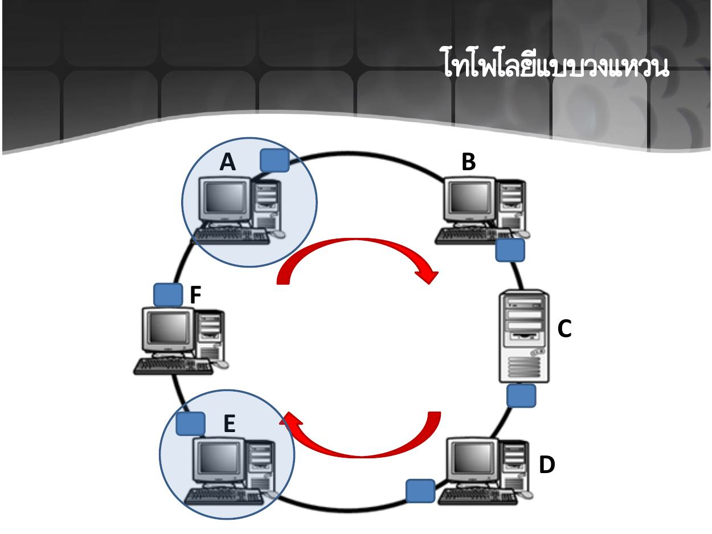
คลิกภาพเพื่อเปิดขยาย
อ่านข้อความต้นฉบับที่สกัดได้ (ไทย/อังกฤษตามไฟล์) โทโพโลยีแบบวงแหวน
A B
F
C
E
D ทบทวนภาษาไทย: บทนำการสื่อสารข้อมูลและเครือข่าย Switching และการส่งผ่านเครือข่าย อุปกรณ์เชื่อม LAN, Backbone และ VLAN
กลับสารบัญ ↑ หน้า 31 — โทโพโลยีแบบวงแหวน ดูภาพต้นฉบับหน้า 31 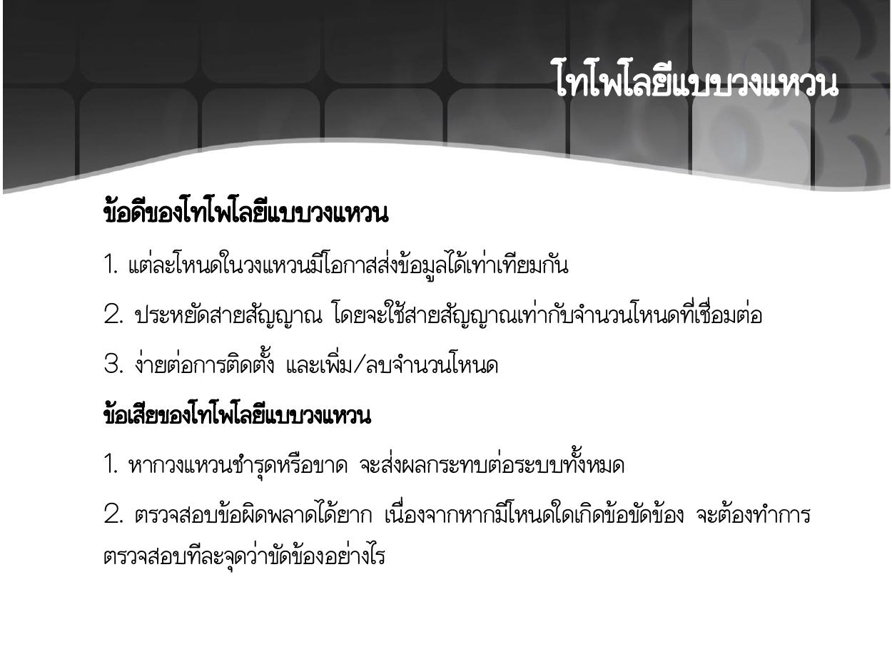
คลิกภาพเพื่อเปิดขยาย
อ่านข้อความต้นฉบับที่สกัดได้ (ไทย/อังกฤษตามไฟล์) โทโพโลยีแบบวงแหวน
ข้อดีของโทโพโลยีแบบวงแหวน
1. แต่ละโหนดในวงแหวนมีโอกาสส่งข้อมูลได้เท่าเทียมกัน
2. ประหยัดสายสัญญาณ โดยจะใช้สายสัญญาณเท่ากับจานวนโหนดทีเ่ ชื่อมต่อ
3. ง่ายต่อการติดตั้ง และเพิ่ม/ลบจานวนโหนด
ข้อเสียของโทโพโลยีแบบวงแหวน
1. หากวงแหวนชารุดหรือขาด จะส่งผลกระทบต่อระบบทั้งหมด
2. ตรวจสอบข้อผิดพลาดได้ยาก เนือ่ งจากหากมีโหนดใดเกิดข้อขัดข้อง จะต้องทาการ
ตรวจสอบทีละจุดว่าขัดข้องอย่างไร ทบทวนภาษาไทย: บทนำการสื่อสารข้อมูลและเครือข่าย Switching และการส่งผ่านเครือข่าย อุปกรณ์เชื่อม LAN, Backbone และ VLAN
กลับสารบัญ ↑ หน้า 32 — โทโพโลยีแบบแมซ ดูภาพต้นฉบับหน้า 32 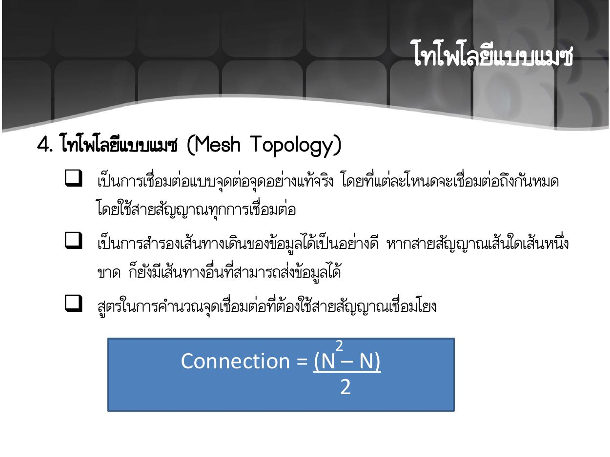
คลิกภาพเพื่อเปิดขยาย
อ่านข้อความต้นฉบับที่สกัดได้ (ไทย/อังกฤษตามไฟล์) โทโพโลยีแบบแมซ
4. โทโพโลยีแบบแมซ (Mesh Topology)
เป็นการเชื่อมต่อแบบจุดต่อจุดอย่างแท้จริง โดยที่แต่ละโหนดจะเชื่อมต่อถึงกันหมด
โดยใช้สายสัญญาณทุกการเชื่อมต่อ
เป็นการสารองเส้นทางเดินของข้อมูลได้เป็นอย่างดี หากสายสัญญาณเส้นใดเส้นหนึง่
ขาด ก็ยังมีเส้นทางอื่นที่สามารถส่งข้อมูลได้
สูตรในการคานวณจุดเชื่อมต่อที่ต้องใช้สายสัญญาณเชื่อมโยง
2
Connection = (N – N)
2 ทบทวนภาษาไทย: บทนำการสื่อสารข้อมูลและเครือข่าย Switching และการส่งผ่านเครือข่าย อุปกรณ์เชื่อม LAN, Backbone และ VLAN
กลับสารบัญ ↑ หน้า 33 — โทโพโลยีแบบดาว ดูภาพต้นฉบับหน้า 33 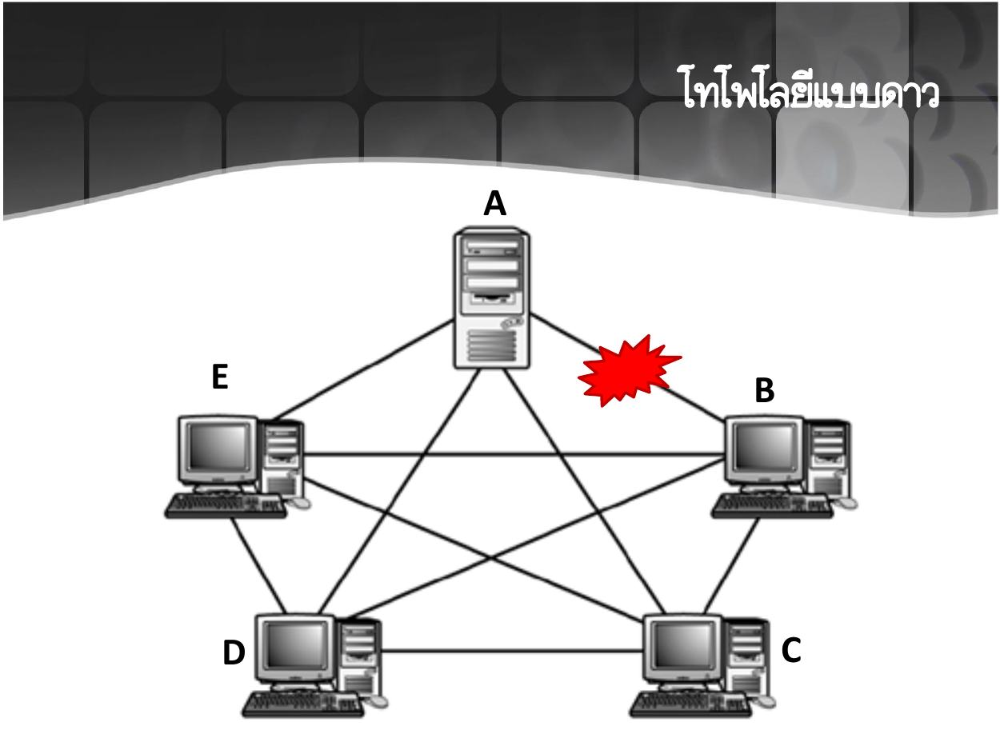
คลิกภาพเพื่อเปิดขยาย
อ่านข้อความต้นฉบับที่สกัดได้ (ไทย/อังกฤษตามไฟล์) โทโพโลยีแบบดาว
A
E B
D C ทบทวนภาษาไทย: บทนำการสื่อสารข้อมูลและเครือข่าย Switching และการส่งผ่านเครือข่าย อุปกรณ์เชื่อม LAN, Backbone และ VLAN
กลับสารบัญ ↑ หน้า 34 — โทโพโลยีแบบแมซ ดูภาพต้นฉบับหน้า 34 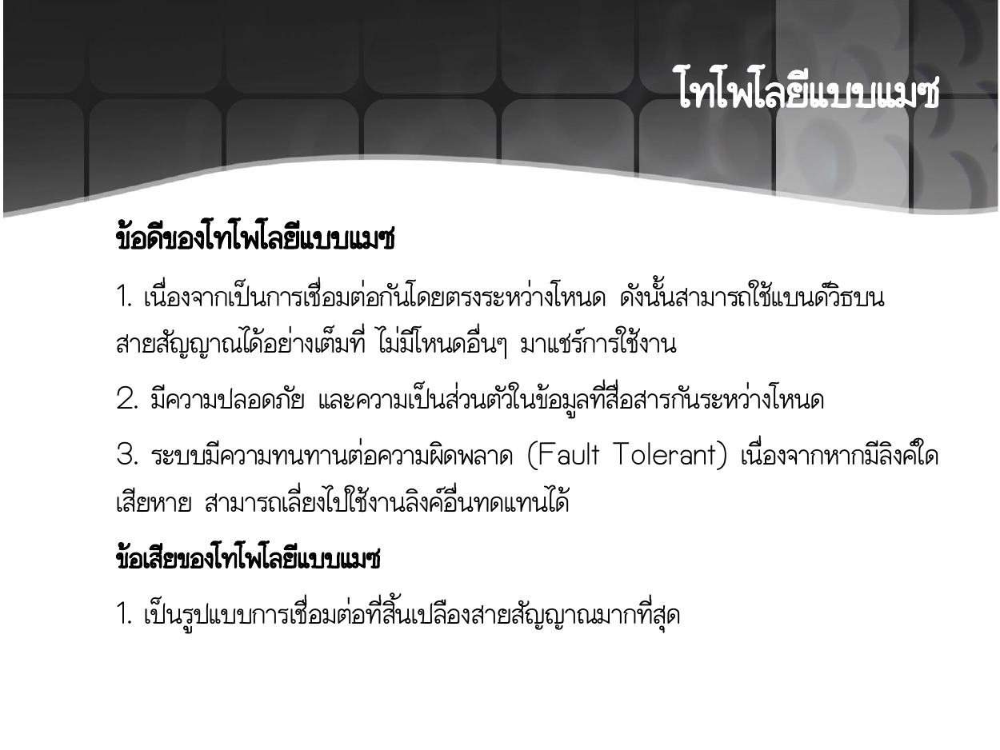
คลิกภาพเพื่อเปิดขยาย
อ่านข้อความต้นฉบับที่สกัดได้ (ไทย/อังกฤษตามไฟล์) โทโพโลยีแบบแมซ
ข้อดีของโทโพโลยีแบบแมซ
1. เนื่องจากเป็นการเชื่อมต่อกันโดยตรงระหว่างโหนด ดังนั้นสามารถใช้แบนด์วิธบน
สายสัญญาณได้อย่างเต็มที่ ไม่มีโหนดอื่นๆ มาแชร์การใช้งาน
2. มีความปลอดภัย และความเป็นส่วนตัวในข้อมูลทีส่ ื่อสารกันระหว่างโหนด
3. ระบบมีความทนทานต่อความผิดพลาด (Fault Tolerant) เนื่องจากหากมีลิงค์ใด
เสียหาย สามารถเลี่ยงไปใช้งานลิงค์อื่นทดแทนได้
ข้อเสียของโทโพโลยีแบบแมซ
1. เป็นรูปแบบการเชื่อมต่อที่สนิ้ เปลืองสายสัญญาณมากทีส่ ุด ทบทวนภาษาไทย: บทนำการสื่อสารข้อมูลและเครือข่าย Switching และการส่งผ่านเครือข่าย อุปกรณ์เชื่อม LAN, Backbone และ VLAN
กลับสารบัญ ↑ หน้า 35 — การจาแนกประเภทของเครือข่าย ดูภาพต้นฉบับหน้า 35 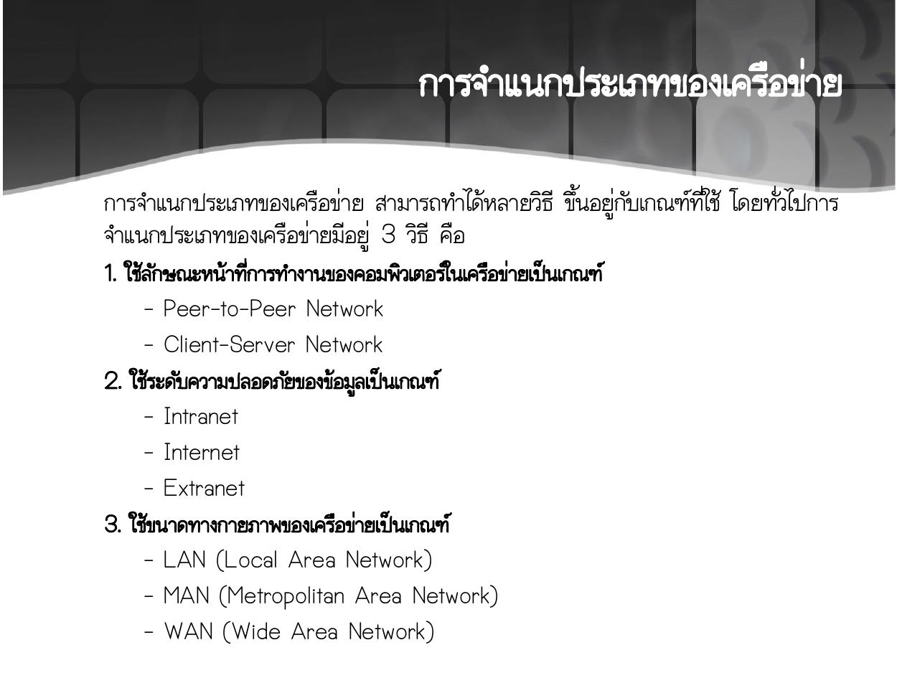
คลิกภาพเพื่อเปิดขยาย
อ่านข้อความต้นฉบับที่สกัดได้ (ไทย/อังกฤษตามไฟล์) การจาแนกประเภทของเครือข่าย
การจาแนกประเภทของเครือข่าย สามารถทาได้หลายวิธี ขึ้นอยู่กบั เกณฑ์ที่ใช้ โดยทัว่ ไปการ
จาแนกประเภทของเครือข่ายมีอยู่ 3 วิธี คือ
1. ใช้ลักษณะหน้าทีก่ ารทางานของคอมพิวเตอร์ในเครือข่ายเป็นเกณฑ์
- Peer-to-Peer Network
- Client-Server Network
2. ใช้ระดับความปลอดภัยของข้อมูลเป็นเกณฑ์
- Intranet
- Internet
- Extranet
3. ใช้ขนาดทางกายภาพของเครือข่ายเป็นเกณฑ์
- LAN (Local Area Network)
- MAN (Metropolitan Area Network)
- WAN (Wide Area Network) ทบทวนภาษาไทย: บทนำการสื่อสารข้อมูลและเครือข่าย Switching และการส่งผ่านเครือข่าย อุปกรณ์เชื่อม LAN, Backbone และ VLAN
กลับสารบัญ ↑ หน้า 36 — แบ่งตามหน้าที่การทางานของคอมพิวเตอร์ในเครือข่าย ดูภาพต้นฉบับหน้า 36 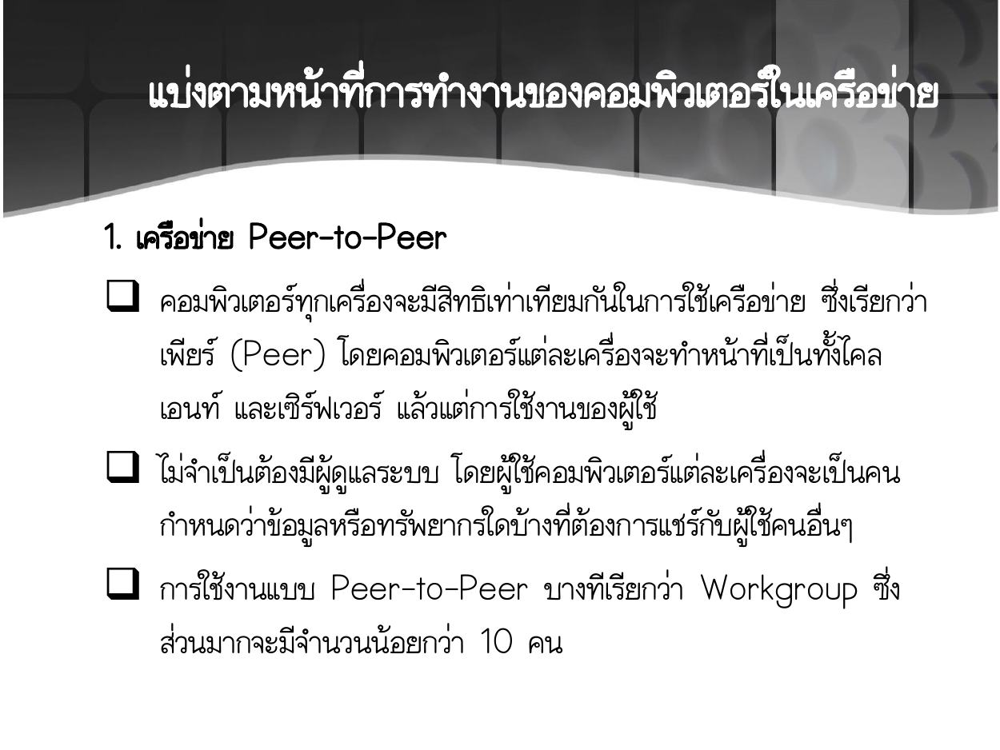
คลิกภาพเพื่อเปิดขยาย
อ่านข้อความต้นฉบับที่สกัดได้ (ไทย/อังกฤษตามไฟล์) แบ่งตามหน้าที่การทางานของคอมพิวเตอร์ในเครือข่าย
1. เครือข่าย Peer-to-Peer
คอมพิวเตอร์ทุกเครื่องจะมีสิทธิเท่าเทียมกันในการใช้เครือข่าย ซึ่งเรียกว่า
เพียร์ (Peer) โดยคอมพิวเตอร์แต่ละเครื่องจะทาหน้าที่เป็นทั้งไคล
เอนท์ และเซิร์ฟเวอร์ แล้วแต่การใช้งานของผู้ใช้
ไม่จาเป็นต้องมีผู้ดูแลระบบ โดยผู้ใช้คอมพิวเตอร์แต่ละเครื่องจะเป็นคน
กาหนดว่าข้อมูลหรือทรัพยากรใดบ้างที่ต้องการแชร์กับผู้ใช้คนอื่นๆ
การใช้งานแบบ Peer-to-Peer บางทีเรียกว่า Workgroup ซึ่ง
ส่วนมากจะมีจานวนน้อยกว่า 10 คน ทบทวนภาษาไทย: บทนำการสื่อสารข้อมูลและเครือข่าย Switching และการส่งผ่านเครือข่าย อุปกรณ์เชื่อม LAN, Backbone และ VLAN
กลับสารบัญ ↑ หน้า 37 — แบ่งตามหน้าที่การทางานของคอมพิวเตอร์ในเครือข่าย ดูภาพต้นฉบับหน้า 37 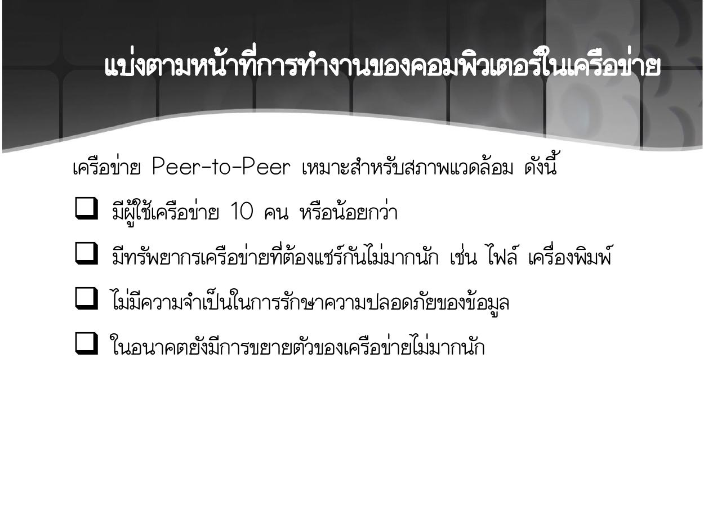
คลิกภาพเพื่อเปิดขยาย
อ่านข้อความต้นฉบับที่สกัดได้ (ไทย/อังกฤษตามไฟล์) แบ่งตามหน้าที่การทางานของคอมพิวเตอร์ในเครือข่าย
เครือข่าย Peer-to-Peer เหมาะสาหรับสภาพแวดล้อม ดังนี้
มีผู้ใช้เครือข่าย 10 คน หรือน้อยกว่า
มีทรัพยากรเครือข่ายที่ต้องแชร์กันไม่มากนัก เช่น ไฟล์ เครื่องพิมพ์
ไม่มีความจาเป็นในการรักษาความปลอดภัยของข้อมูล
ในอนาคตยังมีการขยายตัวของเครือข่ายไม่มากนัก ทบทวนภาษาไทย: บทนำการสื่อสารข้อมูลและเครือข่าย Switching และการส่งผ่านเครือข่าย อุปกรณ์เชื่อม LAN, Backbone และ VLAN
กลับสารบัญ ↑ หน้า 38 — แบ่งตามหน้าที่การทางานของคอมพิวเตอร์ในเครือข่าย ดูภาพต้นฉบับหน้า 38 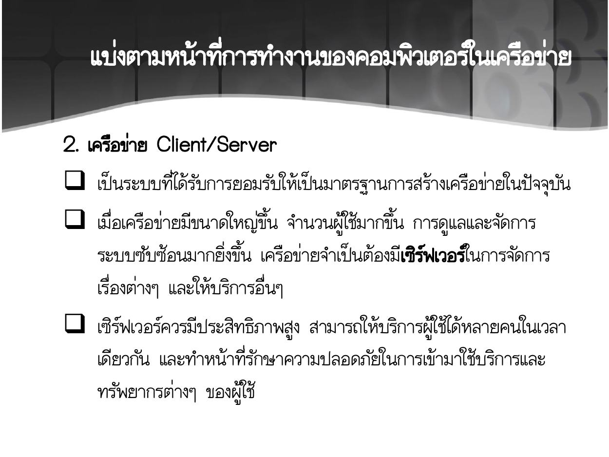
คลิกภาพเพื่อเปิดขยาย
อ่านข้อความต้นฉบับที่สกัดได้ (ไทย/อังกฤษตามไฟล์) แบ่งตามหน้าที่การทางานของคอมพิวเตอร์ในเครือข่าย
2. เครือข่าย Client/Server
เป็นระบบที่ได้รับการยอมรับให้เป็นมาตรฐานการสร้างเครือข่ายในปัจจุบัน
เมื่อเครือข่ายมีขนาดใหญ่ขึ้น จานวนผู้ใช้มากขึ้น การดูแลและจัดการ
ระบบซับซ้อนมากยิ่งขึ้น เครือข่ายจาเป็นต้องมีเซิร์ฟเวอร์ในการจัดการ
เรื่องต่างๆ และให้บริการอื่นๆ
เซิร์ฟเวอร์ควรมีประสิทธิภาพสูง สามารถให้บริการผู้ใช้ได้หลายคนในเวลา
เดียวกัน และทาหน้าที่รักษาความปลอดภัยในการเข้ามาใช้บริการและ
ทรัพยากรต่างๆ ของผู้ใช้ ทบทวนภาษาไทย: บทนำการสื่อสารข้อมูลและเครือข่าย Switching และการส่งผ่านเครือข่าย อุปกรณ์เชื่อม LAN, Backbone และ VLAN
กลับสารบัญ ↑ หน้า 39 — แบ่งตามหน้าที่การทางานของคอมพิวเตอร์ในเครือข่าย ดูภาพต้นฉบับหน้า 39 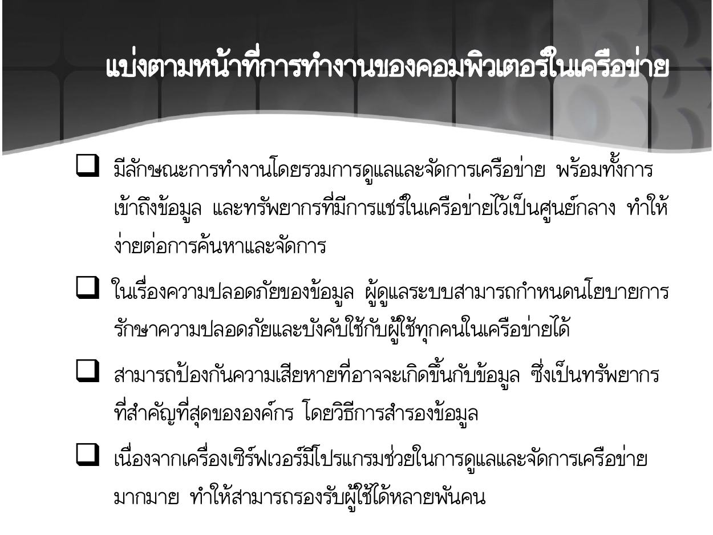
คลิกภาพเพื่อเปิดขยาย
อ่านข้อความต้นฉบับที่สกัดได้ (ไทย/อังกฤษตามไฟล์) แบ่งตามหน้าที่การทางานของคอมพิวเตอร์ในเครือข่าย
มีลักษณะการทางานโดยรวมการดูแลและจัดการเครือข่าย พร้อมทั้งการ
เข้าถึงข้อมูล และทรัพยากรที่มีการแชร์ในเครือข่ายไว้เป็นศูนย์กลาง ทาให้
ง่ายต่อการค้นหาและจัดการ
ในเรื่องความปลอดภัยของข้อมูล ผู้ดูแลระบบสามารถกาหนดนโยบายการ
รักษาความปลอดภัยและบังคับใช้กับผู้ใช้ทุกคนในเครือข่ายได้
สามารถป้องกันความเสียหายที่อาจจะเกิดขึ้นกับข้อมูล ซึ่งเป็นทรัพยากร
ที่สาคัญที่สุดขององค์กร โดยวิธีการสารองข้อมูล
เนื่องจากเครื่องเซิร์ฟเวอร์มีโปรแกรมช่วยในการดูแลและจัดการเครือข่าย
มากมาย ทาให้สามารถรองรับผู้ใช้ได้หลายพันคน ทบทวนภาษาไทย: บทนำการสื่อสารข้อมูลและเครือข่าย Switching และการส่งผ่านเครือข่าย อุปกรณ์เชื่อม LAN, Backbone และ VLAN
กลับสารบัญ ↑ หน้า 40 — แบ่งตามระดับความปลอดภัยของข้อมูลในเครือข่าย ดูภาพต้นฉบับหน้า 40 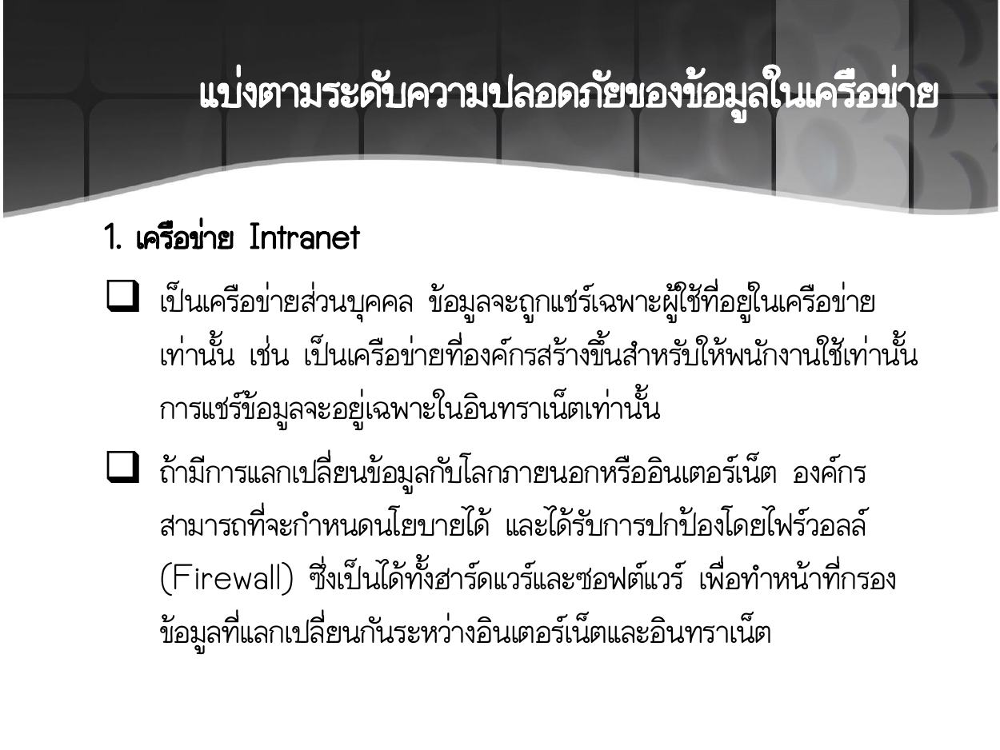
คลิกภาพเพื่อเปิดขยาย
อ่านข้อความต้นฉบับที่สกัดได้ (ไทย/อังกฤษตามไฟล์) แบ่งตามระดับความปลอดภัยของข้อมูลในเครือข่าย
1. เครือข่าย Intranet
เป็นเครือข่ายส่วนบุคคล ข้อมูลจะถูกแชร์เฉพาะผู้ใช้ที่อยู่ในเครือข่าย
เท่านั้น เช่น เป็นเครือข่ายที่องค์กรสร้างขึ้นสาหรับให้พนักงานใช้เท่านั้น
การแชร์ข้อมูลจะอยู่เฉพาะในอินทราเน็ตเท่านั้น
ถ้ามีการแลกเปลี่ยนข้อมูลกับโลกภายนอกหรืออินเตอร์เน็ต องค์กร
สามารถที่จะกาหนดนโยบายได้ และได้รับการปกป้องโดยไฟร์วอลล์
(Firewall) ซึ่งเป็นได้ทั้งฮาร์ดแวร์และซอฟต์แวร์ เพื่อทาหน้าที่กรอง
ข้อมูลที่แลกเปลี่ยนกันระหว่างอินเตอร์เน็ตและอินทราเน็ต ทบทวนภาษาไทย: บทนำการสื่อสารข้อมูลและเครือข่าย Switching และการส่งผ่านเครือข่าย อุปกรณ์เชื่อม LAN, Backbone และ VLAN
กลับสารบัญ ↑ หน้า 41 — แบ่งตามระดับความปลอดภัยของข้อมูลในเครือข่าย ดูภาพต้นฉบับหน้า 41 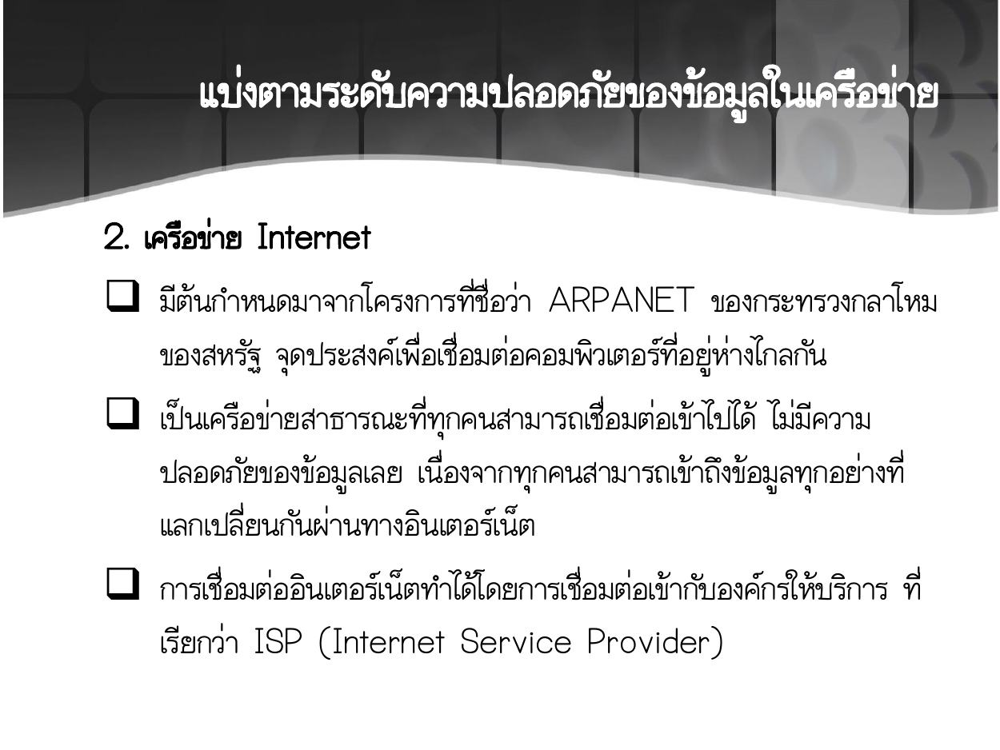
คลิกภาพเพื่อเปิดขยาย
อ่านข้อความต้นฉบับที่สกัดได้ (ไทย/อังกฤษตามไฟล์) แบ่งตามระดับความปลอดภัยของข้อมูลในเครือข่าย
2. เครือข่าย Internet
มีต้นกาหนดมาจากโครงการที่ชื่อว่า ARPANET ของกระทรวงกลาโหม
ของสหรัฐ จุดประสงค์เพื่อเชื่อมต่อคอมพิวเตอร์ที่อยู่ห่างไกลกัน
เป็นเครือข่ายสาธารณะที่ทุกคนสามารถเชื่อมต่อเข้าไปได้ ไม่มีความ
ปลอดภัยของข้อมูลเลย เนื่องจากทุกคนสามารถเข้าถึงข้อมูลทุกอย่างที่
แลกเปลี่ยนกันผ่านทางอินเตอร์เน็ต
การเชื่อมต่ออินเตอร์เน็ตทาได้โดยการเชื่อมต่อเข้ากับองค์กรให้บริการ ที่
เรียกว่า ISP (Internet Service Provider) ทบทวนภาษาไทย: บทนำการสื่อสารข้อมูลและเครือข่าย Switching และการส่งผ่านเครือข่าย อุปกรณ์เชื่อม LAN, Backbone และ VLAN
กลับสารบัญ ↑ หน้า 42 — แบ่งตามระดับความปลอดภัยของข้อมูลในเครือข่าย ดูภาพต้นฉบับหน้า 42 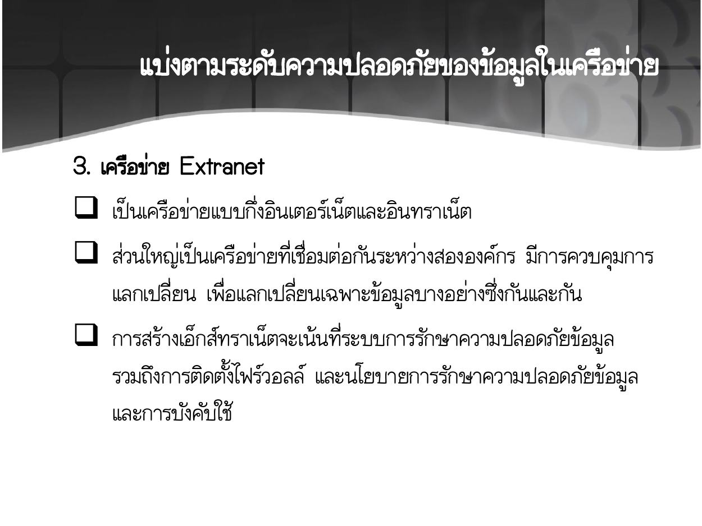
คลิกภาพเพื่อเปิดขยาย
อ่านข้อความต้นฉบับที่สกัดได้ (ไทย/อังกฤษตามไฟล์) แบ่งตามระดับความปลอดภัยของข้อมูลในเครือข่าย
3. เครือข่าย Extranet
เป็นเครือข่ายแบบกึ่งอินเตอร์เน็ตและอินทราเน็ต
ส่วนใหญ่เป็นเครือข่ายที่เชื่อมต่อกันระหว่างสององค์กร มีการควบคุมการ
แลกเปลี่ยน เพื่อแลกเปลี่ยนเฉพาะข้อมูลบางอย่างซึ่งกันและกัน
การสร้างเอ็กส์ทราเน็ตจะเน้นที่ระบบการรักษาความปลอดภัยข้อมูล
รวมถึงการติดตั้งไฟร์วอลล์ และนโยบายการรักษาความปลอดภัยข้อมูล
และการบังคับใช้ ทบทวนภาษาไทย: บทนำการสื่อสารข้อมูลและเครือข่าย Switching และการส่งผ่านเครือข่าย อุปกรณ์เชื่อม LAN, Backbone และ VLAN
กลับสารบัญ ↑ หน้า 43 — แบ่งตามขนาดทางกายภาพของเครือข่าย ดูภาพต้นฉบับหน้า 43 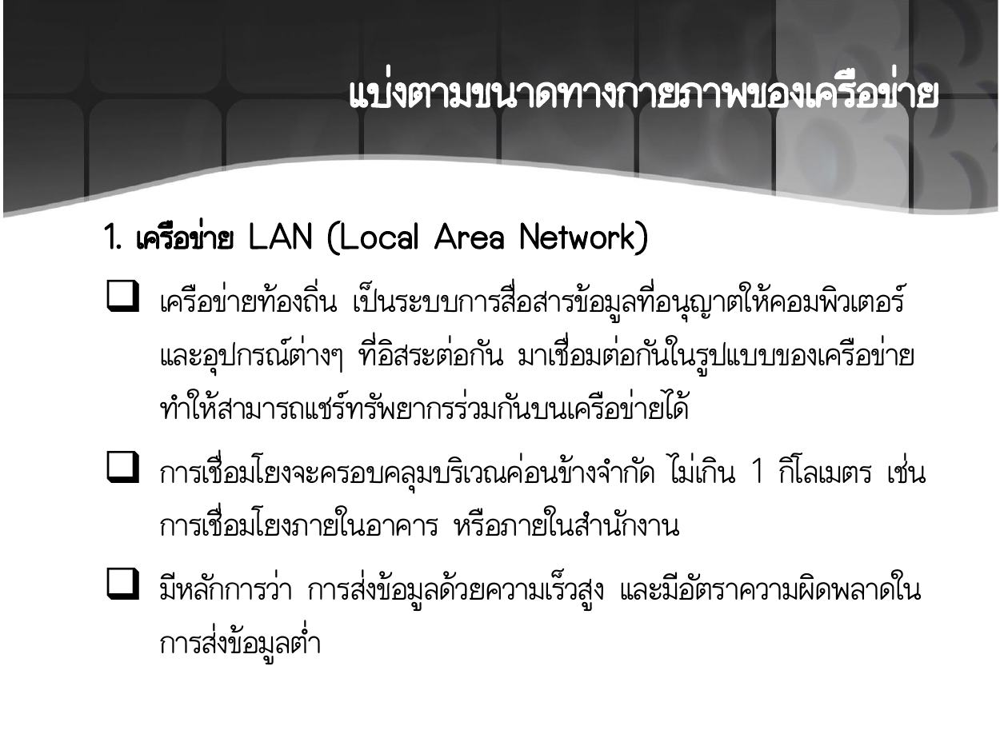
คลิกภาพเพื่อเปิดขยาย
อ่านข้อความต้นฉบับที่สกัดได้ (ไทย/อังกฤษตามไฟล์) แบ่งตามขนาดทางกายภาพของเครือข่าย
1. เครือข่าย LAN (Local Area Network)
เครือข่ายท้องถิ่น เป็นระบบการสื่อสารข้อมูลที่อนุญาตให้คอมพิวเตอร์
และอุปกรณ์ต่างๆ ที่อิสระต่อกัน มาเชื่อมต่อกันในรูปแบบของเครือข่าย
ทาให้สามารถแชร์ทรัพยากรร่วมกันบนเครือข่ายได้
การเชื่อมโยงจะครอบคลุมบริเวณค่อนข้างจากัด ไม่เกิน 1 กิโลเมตร เช่น
การเชื่อมโยงภายในอาคาร หรือภายในสานักงาน
มีหลักการว่า การส่งข้อมูลด้วยความเร็วสูง และมีอัตราความผิดพลาดใน
การส่งข้อมูลต่า ทบทวนภาษาไทย: บทนำการสื่อสารข้อมูลและเครือข่าย Switching และการส่งผ่านเครือข่าย อุปกรณ์เชื่อม LAN, Backbone และ VLAN
กลับสารบัญ ↑ หน้า 44 — แบ่งตามขนาดทางกายภาพของเครือข่าย ดูภาพต้นฉบับหน้า 44 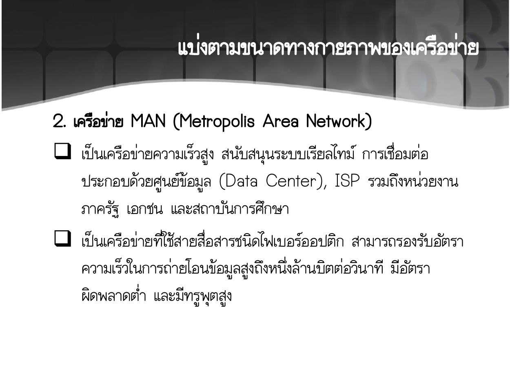
คลิกภาพเพื่อเปิดขยาย
อ่านข้อความต้นฉบับที่สกัดได้ (ไทย/อังกฤษตามไฟล์) แบ่งตามขนาดทางกายภาพของเครือข่าย
2. เครือข่าย MAN (Metropolis Area Network)
เป็นเครือข่ายความเร็วสูง สนับสนุนระบบเรียลไทม์ การเชื่อมต่อ
ประกอบด้วยศูนย์ข้อมูล (Data Center), ISP รวมถึงหน่วยงาน
ภาครัฐ เอกชน และสถาบันการศึกษา
เป็นเครือข่ายที่ใช้สายสื่อสารชนิดไฟเบอร์ออปติก สามารถรองรับอัตรา
ความเร็วในการถ่ายโอนข้อมูลสูงถึงหนึ่งล้านบิตต่อวินาที มีอัตรา
ผิดพลาดต่า และมีทรูพุตสูง ทบทวนภาษาไทย: บทนำการสื่อสารข้อมูลและเครือข่าย Switching และการส่งผ่านเครือข่าย อุปกรณ์เชื่อม LAN, Backbone และ VLAN
กลับสารบัญ ↑ หน้า 45 — แบ่งตามขนาดทางกายภาพของเครือข่าย ดูภาพต้นฉบับหน้า 45 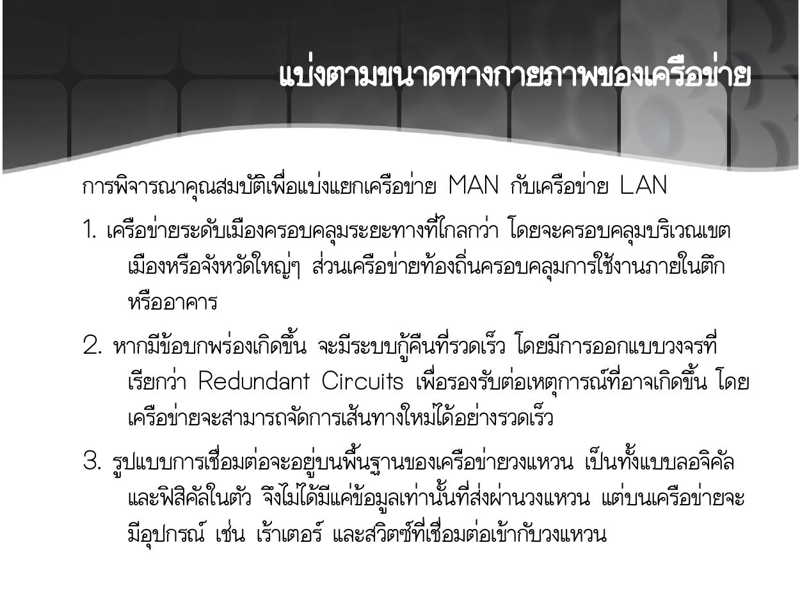
คลิกภาพเพื่อเปิดขยาย
อ่านข้อความต้นฉบับที่สกัดได้ (ไทย/อังกฤษตามไฟล์) แบ่งตามขนาดทางกายภาพของเครือข่าย
การพิจารณาคุณสมบัติเพื่อแบ่งแยกเครือข่าย MAN กับเครือข่าย LAN
1. เครือข่ายระดับเมืองครอบคลุมระยะทางที่ไกลกว่า โดยจะครอบคลุมบริเวณเขต
เมืองหรือจังหวัดใหญ่ๆ ส่วนเครือข่ายท้องถิ่นครอบคลุมการใช้งานภายในตึก
หรืออาคาร
2. หากมีข้อบกพร่องเกิดขึ้น จะมีระบบกู้คืนที่รวดเร็ว โดยมีการออกแบบวงจรที่
เรียกว่า Redundant Circuits เพื่อรองรับต่อเหตุการณ์ที่อาจเกิดขึ้น โดย
เครือข่ายจะสามารถจัดการเส้นทางใหม่ได้อย่างรวดเร็ว
3. รูปแบบการเชื่อมต่อจะอยู่บนพื้นฐานของเครือข่ายวงแหวน เป็นทั้งแบบลอจิคัล
และฟิสิคัลในตัว จึงไม่ได้มีแค่ข้อมูลเท่านั้นที่ส่งผ่านวงแหวน แต่บนเครือข่ายจะ
มีอุปกรณ์ เช่น เร้าเตอร์ และสวิตซ์ที่เชื่อมต่อเข้ากับวงแหวน ทบทวนภาษาไทย: บทนำการสื่อสารข้อมูลและเครือข่าย Switching และการส่งผ่านเครือข่าย อุปกรณ์เชื่อม LAN, Backbone และ VLAN
กลับสารบัญ ↑ หน้า 46 — แบ่งตามขนาดทางกายภาพของเครือข่าย ดูภาพต้นฉบับหน้า 46 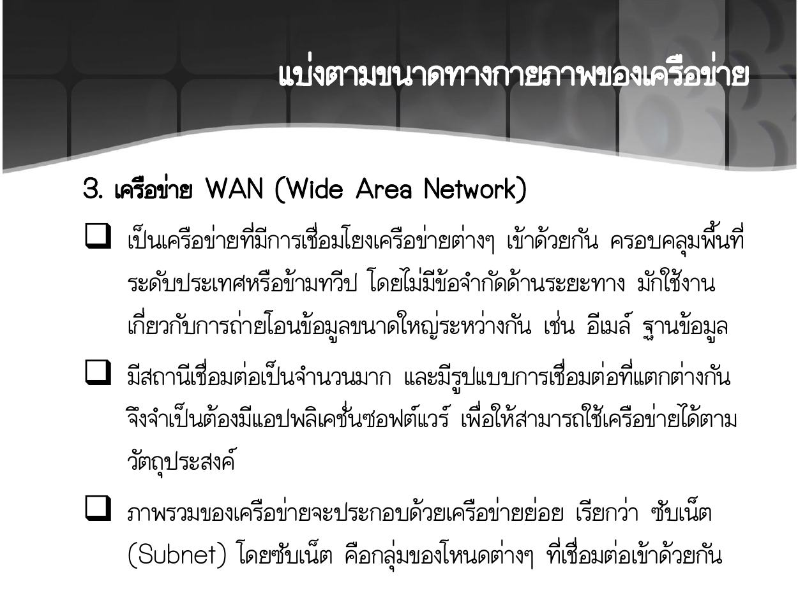
คลิกภาพเพื่อเปิดขยาย
อ่านข้อความต้นฉบับที่สกัดได้ (ไทย/อังกฤษตามไฟล์) แบ่งตามขนาดทางกายภาพของเครือข่าย
3. เครือข่าย WAN (Wide Area Network)
เป็นเครือข่ายที่มีการเชื่อมโยงเครือข่ายต่างๆ เข้าด้วยกัน ครอบคลุมพื้นที่
ระดับประเทศหรือข้ามทวีป โดยไม่มีข้อจากัดด้านระยะทาง มักใช้งาน
เกี่ยวกับการถ่ายโอนข้อมูลขนาดใหญ่ระหว่างกัน เช่น อีเมล์ ฐานข้อมูล
มีสถานีเชื่อมต่อเป็นจานวนมาก และมีรูปแบบการเชื่อมต่อที่แตกต่างกัน
จึงจาเป็นต้องมีแอปพลิเคชั่นซอฟต์แวร์ เพื่อให้สามารถใช้เครือข่ายได้ตาม
วัตถุประสงค์
ภาพรวมของเครือข่ายจะประกอบด้วยเครือข่ายย่อย เรียกว่า ซับเน็ต
(Subnet) โดยซับเน็ต คือกลุ่มของโหนดต่างๆ ที่เชื่อมต่อเข้าด้วยกัน ทบทวนภาษาไทย: บทนำการสื่อสารข้อมูลและเครือข่าย Switching และการส่งผ่านเครือข่าย อุปกรณ์เชื่อม LAN, Backbone และ VLAN
กลับสารบัญ ↑ หน้า 47 — แบ่งตามขนาดทางกายภาพของเครือข่าย ดูภาพต้นฉบับหน้า 47 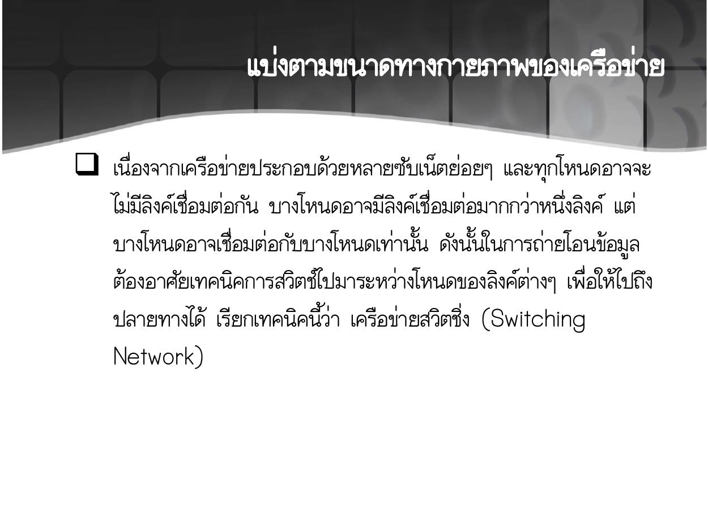
คลิกภาพเพื่อเปิดขยาย
อ่านข้อความต้นฉบับที่สกัดได้ (ไทย/อังกฤษตามไฟล์) แบ่งตามขนาดทางกายภาพของเครือข่าย
เนื่องจากเครือข่ายประกอบด้วยหลายซับเน็ตย่อยๆ และทุกโหนดอาจจะ
ไม่มีลิงค์เชื่อมต่อกัน บางโหนดอาจมีลิงค์เชื่อมต่อมากกว่าหนึ่งลิงค์ แต่
บางโหนดอาจเชื่อมต่อกับบางโหนดเท่านั้น ดังนั้นในการถ่ายโอนข้อมูล
ต้องอาศัยเทคนิคการสวิตช์ไปมาระหว่างโหนดของลิงค์ต่างๆ เพื่อให้ไปถึง
ปลายทางได้ เรียกเทคนิคนี้ว่า เครือข่ายสวิตชิ่ง (Switching
Network) ทบทวนภาษาไทย: บทนำการสื่อสารข้อมูลและเครือข่าย Switching และการส่งผ่านเครือข่าย อุปกรณ์เชื่อม LAN, Backbone และ VLAN
กลับสารบัญ ↑ หน้า 48 — สวิตชิง่ (Switching) ดูภาพต้นฉบับหน้า 48 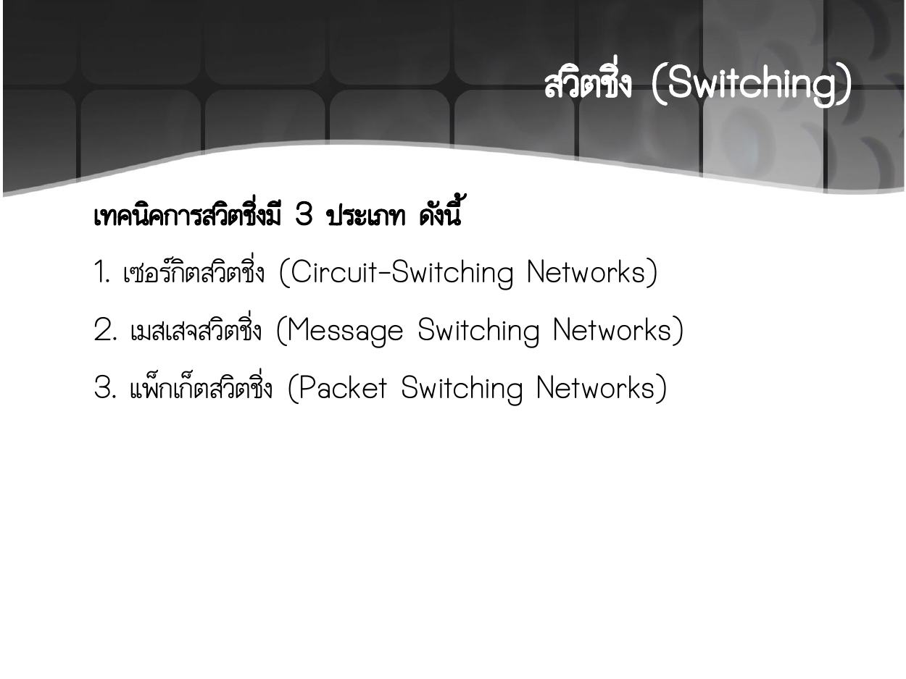
คลิกภาพเพื่อเปิดขยาย
อ่านข้อความต้นฉบับที่สกัดได้ (ไทย/อังกฤษตามไฟล์) สวิตชิง่ (Switching)
เทคนิคการสวิตชิง่ มี 3 ประเภท ดังนี้
1. เซอร์กิตสวิตชิ่ง (Circuit-Switching Networks)
2. เมสเสจสวิตชิ่ง (Message Switching Networks)
3. แพ็กเก็ตสวิตชิ่ง (Packet Switching Networks) ทบทวนภาษาไทย: บทนำการสื่อสารข้อมูลและเครือข่าย Switching และการส่งผ่านเครือข่าย อุปกรณ์เชื่อม LAN, Backbone และ VLAN
กลับสารบัญ ↑ หน้า 49 — เซอร์กติ สวิตชิง่ (Circuit-Switching Networks) ดูภาพต้นฉบับหน้า 49 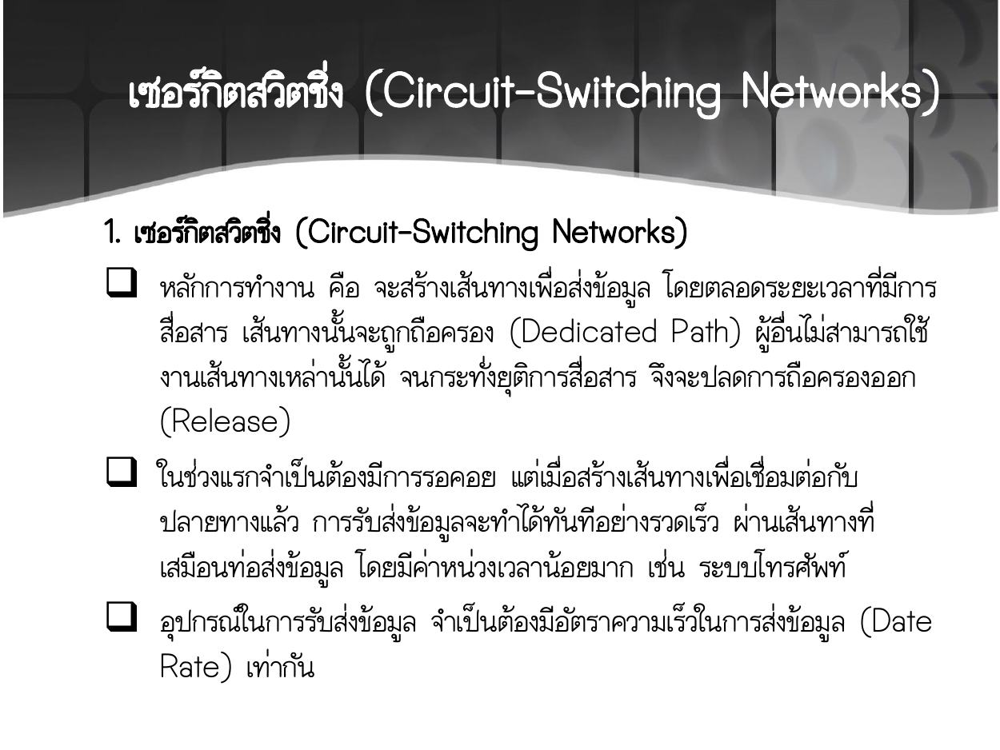
คลิกภาพเพื่อเปิดขยาย
อ่านข้อความต้นฉบับที่สกัดได้ (ไทย/อังกฤษตามไฟล์) เซอร์กติ สวิตชิง่ (Circuit-Switching Networks)
1. เซอร์กติ สวิตชิง่ (Circuit-Switching Networks)
หลักการทางาน คือ จะสร้างเส้นทางเพื่อส่งข้อมูล โดยตลอดระยะเวลาที่มีการ
สื่อสาร เส้นทางนั้นจะถูกถือครอง (Dedicated Path) ผู้อื่นไม่สามารถใช้
งานเส้นทางเหล่านั้นได้ จนกระทั่งยุติการสื่อสาร จึงจะปลดการถือครองออก
(Release)
ในช่วงแรกจาเป็นต้องมีการรอคอย แต่เมื่อสร้างเส้นทางเพื่อเชื่อมต่อกับ
ปลายทางแล้ว การรับส่งข้อมูลจะทาได้ทันทีอย่างรวดเร็ว ผ่านเส้นทางที่
เสมือนท่อส่งข้อมูล โดยมีค่าหน่วงเวลาน้อยมาก เช่น ระบบโทรศัพท์
อุปกรณ์ในการรับส่งข้อมูล จาเป็นต้องมีอัตราความเร็วในการส่งข้อมูล (Date
Rate) เท่ากัน ทบทวนภาษาไทย: บทนำการสื่อสารข้อมูลและเครือข่าย Switching และการส่งผ่านเครือข่าย อุปกรณ์เชื่อม LAN, Backbone และ VLAN
กลับสารบัญ ↑ หน้า 50 — เซอร์กติ สวิตชิง่ (Circuit-Switching Networks) ดูภาพต้นฉบับหน้า 50 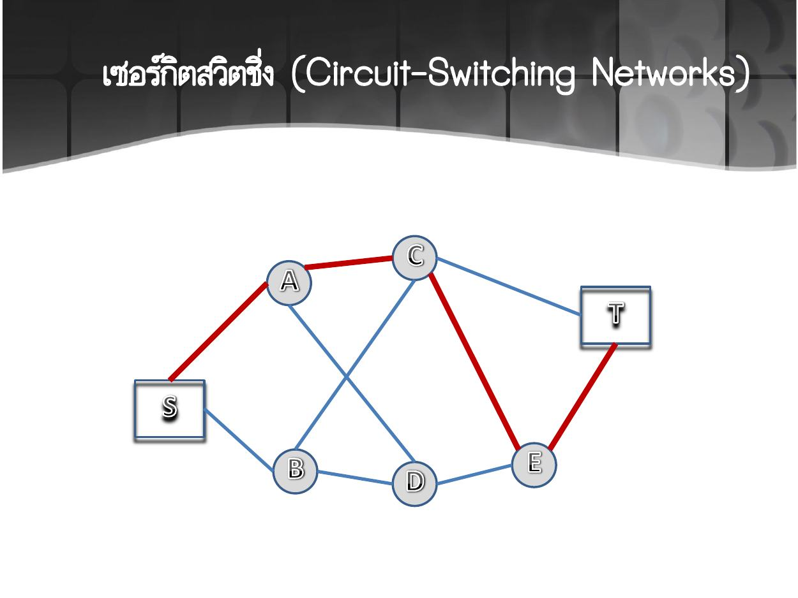
คลิกภาพเพื่อเปิดขยาย
อ่านข้อความต้นฉบับที่สกัดได้ (ไทย/อังกฤษตามไฟล์) เซอร์กติ สวิตชิง่ (Circuit-Switching Networks) ทบทวนภาษาไทย: บทนำการสื่อสารข้อมูลและเครือข่าย Switching และการส่งผ่านเครือข่าย อุปกรณ์เชื่อม LAN, Backbone และ VLAN
กลับสารบัญ ↑ หน้า 51 — เมสเสจสวิตชิ่ง (Message Switching Networks) ดูภาพต้นฉบับหน้า 51 คลิกภาพเพื่อเปิดขยาย
อ่านข้อความต้นฉบับที่สกัดได้ (ไทย/อังกฤษตามไฟล์) เมสเสจสวิตชิ่ง (Message Switching Networks)
2. เมสเสจสวิตชิง่ (Message Switching Networks)
หลักการทางาน คือ การส่งข้อมูลจะส่งต่อเป็นทอดๆ โดยจะมีการถือ
ครองเส้นทางในการลาเลียงข้อมูลในช่วงเวลาหนึ่งเท่านั้น โดยเมื่อโหนด
หนึ่งโหนดใดได้จัดเก็บเมสเสจนั้นไว้ชั่วคราวแล้ว เส้นทางก็จะถูกปลดออก
เพื่อให้ผู้อื่นใช้งานได้
ข้อเสียคือ มีค่าหน่วงเวลาสูง เนื่องจากข้อมูลที่ส่งไประหว่างทางนั้น จะ
ถูกจัดเก็บไว้ชั่วคราว ซึ่งอุปกรณ์ในการจัดเก็บนั้นมีการประมวลผลช้า
หากข้อมูลที่ส่งมีขนาดใหญ่ มีการแบ่งข้อมูลออกเป็นส่วนๆ ต้องเสียเวลา
ในการส่งมาก รวมทั้งหากจานวนโหนดที่ส่งต่อมีจานวนมาก ก็ทาให้เกิด
ความล่าช้าขึ้นเช่นกัน ทบทวนภาษาไทย: บทนำการสื่อสารข้อมูลและเครือข่าย Switching และการส่งผ่านเครือข่าย อุปกรณ์เชื่อม LAN, Backbone และ VLAN
กลับสารบัญ ↑ หน้า 52 — เมสเสจสวิตชิ่ง (Message Switching Networks) ดูภาพต้นฉบับหน้า 52 คลิกภาพเพื่อเปิดขยาย
อ่านข้อความต้นฉบับที่สกัดได้ (ไทย/อังกฤษตามไฟล์) เมสเสจสวิตชิ่ง (Message Switching Networks) ทบทวนภาษาไทย: บทนำการสื่อสารข้อมูลและเครือข่าย Switching และการส่งผ่านเครือข่าย อุปกรณ์เชื่อม LAN, Backbone และ VLAN
กลับสารบัญ ↑ หน้า 53 — แพ็กเก็ตสวิตชิง่ (Packet Switching Networks) ดูภาพต้นฉบับหน้า 53 คลิกภาพเพื่อเปิดขยาย
อ่านข้อความต้นฉบับที่สกัดได้ (ไทย/อังกฤษตามไฟล์) แพ็กเก็ตสวิตชิง่ (Packet Switching Networks)
3. แพ็กเก็ตสวิตชิง่ (Packet Switching Networks)
หลักการทางาน คือ ในการส่งข้อมูลจะทาการแบ่งเมสเสจข้อมูลออกเป็น
ชิ้นเล็กๆ เรียกว่า แพ็กเก็ต แต่ละแพ็กเก็ตจะถูกส่งจากต้นทางไปยังปลาย
ทางผ่านโหนดต่างๆ โหนดที่รับแพ็กเก็ตจะจัดเก็บแพ็กเก็ตไว้ชั่วคราวบน
หน่วยความจา เช่น แรม และทาการส่งต่อไปยังโหนดถัดไปเรื่อยๆ
จนกระทั่งถึงปลายทาง
ข้อดีคือ มีค่าหน่วงเวลาต่า โดยค่าหน่วงเวลาของแพ็กเก็ตแรกจะเกิดขึ้น
เพียงชั่วครู่ขณะที่มีการวิ่งผ่านเส้นทางที่วางไว้ในรอบแรก จากนั้นแพ็กเก็ต
ที่ส่งถัดมาจะทยอยส่งตามกันมาอย่างรวดเร็ว และหากใช้สายส่งสัญญาณ
ความเร็วสูง จะทาให้ค่าหน่วงเวลาที่เกิดขึ้นมีค่าต่ามาก ทบทวนภาษาไทย: บทนำการสื่อสารข้อมูลและเครือข่าย Switching และการส่งผ่านเครือข่าย อุปกรณ์เชื่อม LAN, Backbone และ VLAN
กลับสารบัญ ↑ หน้า 54 — แพ็กเก็ตสวิตชิง่ (Packet Switching Networks) ดูภาพต้นฉบับหน้า 54 คลิกภาพเพื่อเปิดขยาย
อ่านข้อความต้นฉบับที่สกัดได้ (ไทย/อังกฤษตามไฟล์) แพ็กเก็ตสวิตชิง่ (Packet Switching Networks)
การสื่อสารด้วยวิธีแพ็กเก็ตสวิตชิ่งสามารถแบ่งออกได้ 2 ประเภท คือ
1. เครือข่ายดาต้าแกรม (Datagram Networks)
ใช้งานอยู่บนชั้นสื่อสารเน็ตเวิร์ก
แต่ละแพ็กเก็ตจะถูกส่งไปตามเส้นทางอย่างอิสระ สามารถใช้เส้นทางแตกต่าง
กันได้ถึงแม้ว่าจะมาจากเมสเสจเดียวกัน โดยสวิตช์ในเครือข่าย หรือเร้าเตอร์ทา
หน้าที่ส่งผ่านเครือข่ายจากต้นทางไปยังปลายทาง
ข้อเสีย คือ แพ็กเก็ตต่างๆ ที่ส่งมายังปลายทางจะถึงที่หมายไม่พร้อมกัน โดย
เป็นหน้าที่ของโปรโตคอลในชั้นสื่อสารสูงขึ้นไป ที่จะจัดการเรื่องลาดับของดาต้า
แกรม และการสูญหายและซ้าซ้อนของดาต้าแกรม ก่อนที่จะส่งผ่านไปยัง
แอปพลิเคชั่น ทบทวนภาษาไทย: บทนำการสื่อสารข้อมูลและเครือข่าย Switching และการส่งผ่านเครือข่าย อุปกรณ์เชื่อม LAN, Backbone และ VLAN
กลับสารบัญ ↑ หน้า 55 — แพ็กเก็ตสวิตชิง่ (Packet Switching Networks) ดูภาพต้นฉบับหน้า 55 คลิกภาพเพื่อเปิดขยาย
อ่านข้อความต้นฉบับที่สกัดได้ (ไทย/อังกฤษตามไฟล์) แพ็กเก็ตสวิตชิง่ (Packet Switching Networks)
1. เครือข่ายเวอร์ชวลเซอร์กติ (Virtual-Circuit Networks)
เป็นการผสมผสานการทางานระหว่างเครือข่ายเซอร์กิตสวิตชิ่ง (ทางานบนชั้น
สื่อสารฟิสิคัล) และเครือข่ายดาต้าแกรม (ทางานบนชั้นสื่อสารเน็ตเวิร์ก) เข้า
ด้วยกัน โดยเวอร์ชวลเซอร์กิตจะทางานบนชั้นสื่อสารดาต้าลิงค์
ในเชิงตรรกะ จะดูเหมือนว่าเป็นวงจรที่ติดต่อกัน แต่ในเชิงกายภาพ จะเป็น
การเชื่อมต่อผ่านเครือข่ายสวิตช์ ซึ่งเป็นการเชื่อมต่อแบบไม่ถาวร โดยจะ
ทางานในช่วงเวลาหนึ่งเมื่อมีการส่งผ่านแพ็กเก็ต และช่วงที่ไม่มีการส่งผ่านแพ็ก
เก็ตก็จะไม่มีการเชื่อมต่อระหว่างกัน
ทาการสร้างวงจรสมมติขึ้นมา เสมือนกับมีเส้นทางจริงที่เชื่อมโยงอย่างต่อเนื่อง
จากต้นทางไปยังปลายทาง ทบทวนภาษาไทย: บทนำการสื่อสารข้อมูลและเครือข่าย Switching และการส่งผ่านเครือข่าย อุปกรณ์เชื่อม LAN, Backbone และ VLAN
กลับสารบัญ ↑